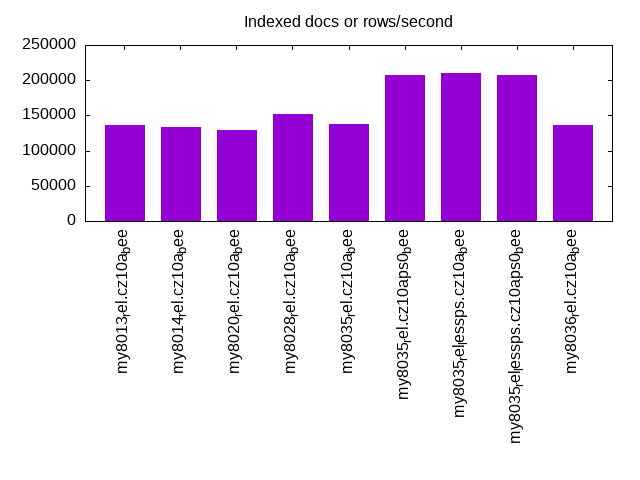
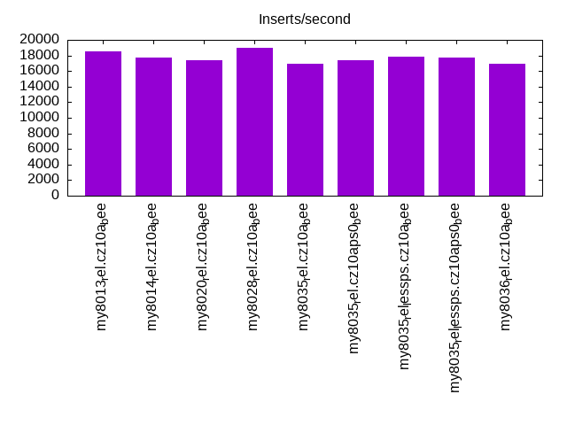
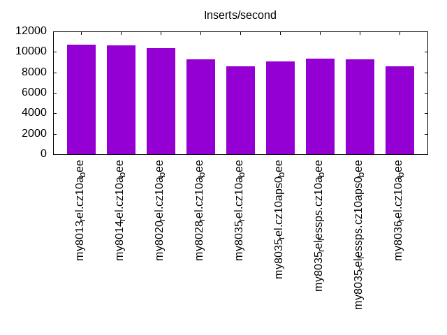
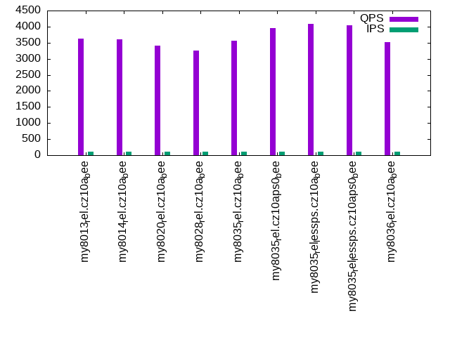
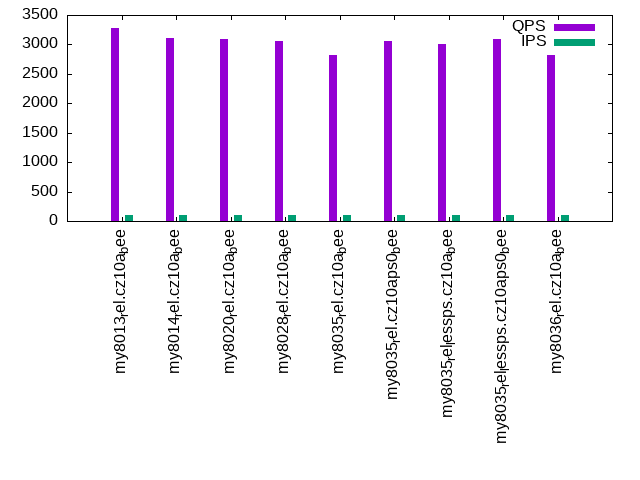
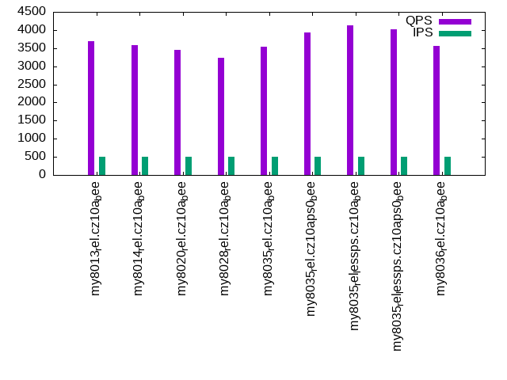
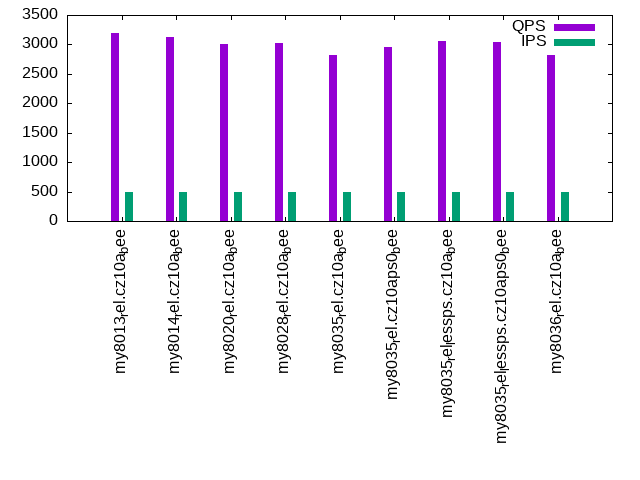
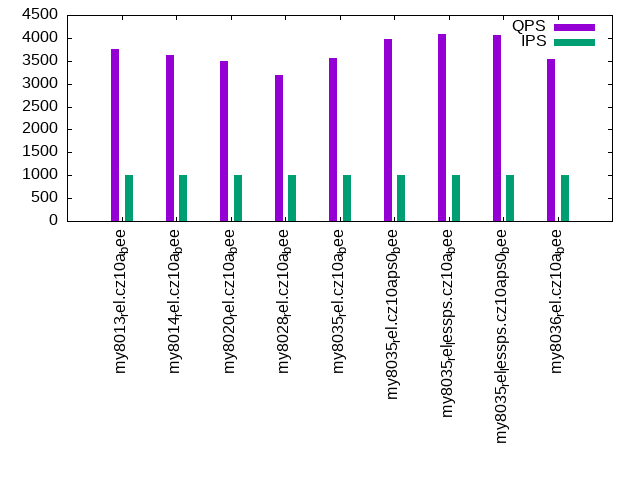
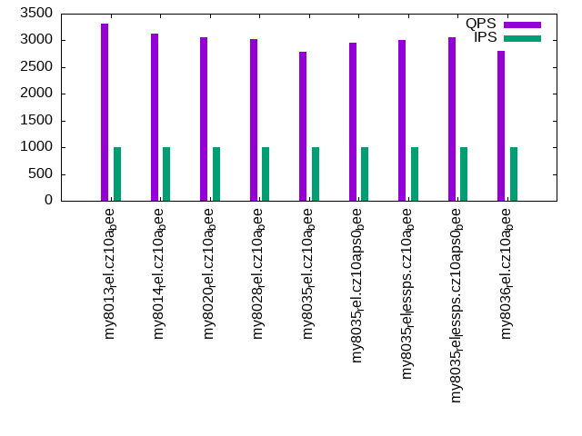

This is a report for the insert benchmark with 30M docs and 1 client(s). It is generated by scripts (bash, awk, sed) and Tufte might not be impressed. An overview of the insert benchmark is here and a short update is here. Below, by DBMS, I mean DBMS+version.config. An example is my8020.c10b40 where my means MySQL, 8020 is version 8.0.20 and c10b40 is the name for the configuration file.
The test server has 8 AMD cores, 16G RAM and an NVMe SSD. It is described here as the Beelink. The benchmark was run with 1 client and there were 1 or 3 connections per client (1 for queries or inserts without rate limits, 1+1 for rate limited inserts+deletes). It uses 1 table. It loads 30M rows per table without secondary indexes, creates 3 secondary indexes per table, then inserts 50m+50m rows per table with a delete per insert to avoid growing the table. It then does 6 read+write tests for 1800s each that do queries as fast as possible with 100,100,500,500,1000,1000 inserts/s and the same for deletes/s per client concurrent with the queries. The database is cached in memory. Clients and the DBMS share one server. The per-database configs are in the per-database subdirectories here.
The tested DBMS are:
The numbers are inserts/s for l.i0, l.i1 and l.i2, indexed docs (or rows) /s for l.x and queries/s for qr100, qp100 thru qr1000, qp1000" The values are the average rate over the entire test for inserts (IPS) and queries (QPS). The range of values for IPS and QPS is split into 3 parts: bottom 25%, middle 50%, top 25%. Values in the bottom 25% have a red background, values in the top 25% have a green background and values in the middle have no color. A gray background is used for values that can be ignored because the DBMS did not sustain the target insert rate. Red backgrounds are not used when the minimum value is within 80% of the max value.
| dbms | l.i0 | l.x | l.i1 | l.i2 | qr100 | qp100 | qr500 | qp500 | qr1000 | qp1000 |
|---|---|---|---|---|---|---|---|---|---|---|
| my8013_rel.cz10a_bee | 70588 | 136987 | 18544 | 10730 | 3637 | 3275 | 3694 | 3200 | 3766 | 3317 |
| my8014_rel.cz10a_bee | 70422 | 133929 | 17683 | 10661 | 3594 | 3106 | 3580 | 3128 | 3620 | 3119 |
| my8020_rel.cz10a_bee | 65646 | 129311 | 17338 | 10330 | 3408 | 3091 | 3443 | 3002 | 3501 | 3050 |
| my8028_rel.cz10a_bee | 63966 | 151516 | 19029 | 9242 | 3254 | 3058 | 3239 | 3021 | 3200 | 3026 |
| my8035_rel.cz10a_bee | 56818 | 138249 | 16928 | 8584 | 3554 | 2826 | 3540 | 2814 | 3567 | 2783 |
| my8035_rel.cz10aps0_bee | 59172 | 206897 | 17331 | 9042 | 3955 | 3056 | 3933 | 2962 | 3985 | 2957 |
| my8035_rel_lessps.cz10a_bee | 60606 | 209791 | 17825 | 9320 | 4080 | 3011 | 4123 | 3066 | 4077 | 3009 |
| my8035_rel_lessps.cz10aps0_bee | 60484 | 206897 | 17723 | 9242 | 4048 | 3099 | 4026 | 3041 | 4054 | 3052 |
| my8036_rel.cz10a_bee | 57252 | 136987 | 16906 | 8584 | 3526 | 2814 | 3550 | 2825 | 3531 | 2800 |
This table has relative throughput, throughput for the DBMS relative to the DBMS in the first line, using the absolute throughput from the previous table. Values less than 0.95 have a yellow background. Values greater than 1.05 have a blue background.
| dbms | l.i0 | l.x | l.i1 | l.i2 | qr100 | qp100 | qr500 | qp500 | qr1000 | qp1000 |
|---|---|---|---|---|---|---|---|---|---|---|
| my8013_rel.cz10a_bee | 1.00 | 1.00 | 1.00 | 1.00 | 1.00 | 1.00 | 1.00 | 1.00 | 1.00 | 1.00 |
| my8014_rel.cz10a_bee | 1.00 | 0.98 | 0.95 | 0.99 | 0.99 | 0.95 | 0.97 | 0.98 | 0.96 | 0.94 |
| my8020_rel.cz10a_bee | 0.93 | 0.94 | 0.93 | 0.96 | 0.94 | 0.94 | 0.93 | 0.94 | 0.93 | 0.92 |
| my8028_rel.cz10a_bee | 0.91 | 1.11 | 1.03 | 0.86 | 0.89 | 0.93 | 0.88 | 0.94 | 0.85 | 0.91 |
| my8035_rel.cz10a_bee | 0.80 | 1.01 | 0.91 | 0.80 | 0.98 | 0.86 | 0.96 | 0.88 | 0.95 | 0.84 |
| my8035_rel.cz10aps0_bee | 0.84 | 1.51 | 0.93 | 0.84 | 1.09 | 0.93 | 1.06 | 0.93 | 1.06 | 0.89 |
| my8035_rel_lessps.cz10a_bee | 0.86 | 1.53 | 0.96 | 0.87 | 1.12 | 0.92 | 1.12 | 0.96 | 1.08 | 0.91 |
| my8035_rel_lessps.cz10aps0_bee | 0.86 | 1.51 | 0.96 | 0.86 | 1.11 | 0.95 | 1.09 | 0.95 | 1.08 | 0.92 |
| my8036_rel.cz10a_bee | 0.81 | 1.00 | 0.91 | 0.80 | 0.97 | 0.86 | 0.96 | 0.88 | 0.94 | 0.84 |
This lists the average rate of inserts/s for the tests that do inserts concurrent with queries. For such tests the query rate is listed in the table above. The read+write tests are setup so that the insert rate should match the target rate every second. Cells that are not at least 95% of the target have a red background to indicate a failure to satisfy the target.
| dbms | qr100.L1 | qp100.L2 | qr500.L3 | qp500.L4 | qr1000.L5 | qp1000.L6 |
|---|---|---|---|---|---|---|
| my8013_rel.cz10a_bee | 100 | 100 | 499 | 499 | 998 | 997 |
| my8014_rel.cz10a_bee | 100 | 100 | 499 | 499 | 997 | 998 |
| my8020_rel.cz10a_bee | 100 | 100 | 499 | 499 | 998 | 998 |
| my8028_rel.cz10a_bee | 100 | 100 | 499 | 499 | 998 | 998 |
| my8035_rel.cz10a_bee | 100 | 100 | 499 | 499 | 997 | 998 |
| my8035_rel.cz10aps0_bee | 100 | 100 | 499 | 499 | 998 | 998 |
| my8035_rel_lessps.cz10a_bee | 100 | 100 | 499 | 499 | 998 | 998 |
| my8035_rel_lessps.cz10aps0_bee | 100 | 100 | 499 | 499 | 997 | 998 |
| my8036_rel.cz10a_bee | 100 | 100 | 499 | 499 | 998 | 998 |
| target | 100 | 100 | 500 | 500 | 1000 | 1000 |
l.i0: load without secondary indexes. Graphs for performance per 1-second interval are here.
Average throughput:
Insert response time histogram: each cell has the percentage of responses that take <= the time in the header and max is the max response time in seconds. For the max column values in the top 25% of the range have a red background and in the bottom 25% of the range have a green background. The red background is not used when the min value is within 80% of the max value.
| dbms | 256us | 1ms | 4ms | 16ms | 64ms | 256ms | 1s | 4s | 16s | gt | max |
|---|---|---|---|---|---|---|---|---|---|---|---|
| my8013_rel.cz10a_bee | 99.558 | 0.354 | 0.088 | 0.059 | |||||||
| my8014_rel.cz10a_bee | 99.441 | 0.455 | 0.103 | nonzero | 0.070 | ||||||
| my8020_rel.cz10a_bee | 99.379 | 0.465 | 0.152 | 0.003 | 0.088 | ||||||
| my8028_rel.cz10a_bee | 99.464 | 0.392 | 0.141 | 0.003 | 0.075 | ||||||
| my8035_rel.cz10a_bee | 99.417 | 0.444 | 0.137 | 0.003 | 0.069 | ||||||
| my8035_rel.cz10aps0_bee | 99.443 | 0.423 | 0.131 | 0.003 | 0.070 | ||||||
| my8035_rel_lessps.cz10a_bee | 99.451 | 0.401 | 0.146 | 0.002 | 0.068 | ||||||
| my8035_rel_lessps.cz10aps0_bee | 99.448 | 0.407 | 0.142 | 0.003 | 0.073 | ||||||
| my8036_rel.cz10a_bee | 99.421 | 0.453 | 0.123 | 0.003 | 0.074 |
Performance metrics for the DBMS listed above. Some are normalized by throughput, others are not. Legend for results is here.
ips qps rps rmbps wps wmbps rpq rkbpq wpi wkbpi csps cpups cspq cpupq dbgb1 dbgb2 rss maxop p50 p99 tag 70588 0 613 2.4 256.1 23.3 0.009 0.035 0.004 0.339 57300 35.1 0.812 40 2.0 18.5 3.1 0.059 70922 64363 my8013_rel.cz10a_bee 70422 0 583 2.3 256.8 23.2 0.008 0.033 0.004 0.338 20363 22.8 0.289 26 2.0 18.5 3.1 0.070 70231 63472 my8014_rel.cz10a_bee 65646 0 0 0.0 274.3 21.4 0.000 0.000 0.004 0.334 17552 22.4 0.267 27 2.0 18.5 3.1 0.088 66089 58459 my8020_rel.cz10a_bee 63966 0 0 0.0 263.3 20.9 0.000 0.000 0.004 0.334 7024 20.9 0.110 26 2.0 18.6 3.0 0.075 64328 58433 my8028_rel.cz10a_bee 56818 0 0 0.0 245.3 18.9 0.000 0.000 0.004 0.341 6455 20.5 0.114 29 2.0 18.6 3.1 0.069 56876 51241 my8035_rel.cz10a_bee 59172 0 0 0.0 256.4 19.8 0.000 0.000 0.004 0.342 6771 21.2 0.114 29 2.0 18.6 2.9 0.070 59535 53057 my8035_rel.cz10aps0_bee 60606 0 0 0.0 260.9 20.2 0.000 0.000 0.004 0.342 6906 20.7 0.114 27 2.0 18.6 2.7 0.068 60833 55150 my8035_rel_lessps.cz10a_bee 60484 0 0 0.0 261.5 20.2 0.000 0.000 0.004 0.342 6896 20.7 0.114 27 2.0 18.6 2.7 0.073 60833 54869 my8035_rel_lessps.cz10aps0_bee 57252 0 0 0.0 246.6 19.1 0.000 0.000 0.004 0.341 6585 20.8 0.115 29 2.0 18.6 3.1 0.074 57337 52241 my8036_rel.cz10a_bee
l.x: create secondary indexes.
Average throughput:
Performance metrics for the DBMS listed above. Some are normalized by throughput, others are not. Legend for results is here.
ips qps rps rmbps wps wmbps rpq rkbpq wpi wkbpi csps cpups cspq cpupq dbgb1 dbgb2 rss maxop p50 p99 tag 136987 0 0 0.0 1192.5 128.8 0.000 0.000 0.009 0.963 12243 14.1 0.089 8 4.5 21.1 4.9 0.003 NA NA my8013_rel.cz10a_bee 133929 0 0 0.0 1176.9 126.9 0.000 0.000 0.009 0.970 8848 12.3 0.066 7 4.5 21.1 4.7 0.003 NA NA my8014_rel.cz10a_bee 129311 0 0 0.0 1381.5 119.5 0.000 0.000 0.011 0.947 8607 11.9 0.067 7 4.5 21.1 3.9 0.003 NA NA my8020_rel.cz10a_bee 151516 0 777 49.1 2832.3 166.9 0.005 0.332 0.019 1.128 10549 44.1 0.070 23 4.5 21.1 4.5 0.003 NA NA my8028_rel.cz10a_bee 138249 0 704 44.5 2806.3 155.1 0.005 0.330 0.020 1.149 10192 42.9 0.074 25 4.5 21.1 5.3 0.003 NA NA my8035_rel.cz10a_bee 206897 0 1045 66.1 4306.5 231.8 0.005 0.327 0.021 1.147 15107 40.4 0.073 16 4.5 21.1 4.1 0.003 NA NA my8035_rel.cz10aps0_bee 209791 0 1082 68.4 4149.8 235.2 0.005 0.334 0.020 1.148 14760 40.3 0.070 15 4.5 21.1 4.2 0.006 NA NA my8035_rel_lessps.cz10a_bee 206897 0 1083 68.4 3552.3 225.8 0.005 0.339 0.017 1.118 13598 40.2 0.066 16 4.5 21.1 4.2 0.003 NA NA my8035_rel_lessps.cz10aps0_bee 136987 0 705 44.6 2541.8 151.0 0.005 0.333 0.019 1.129 9646 43.3 0.070 25 4.5 21.1 5.3 0.004 NA NA my8036_rel.cz10a_bee
l.i1: continue load after secondary indexes created with 50 inserts per transaction. Graphs for performance per 1-second interval are here.
Average throughput:
Insert response time histogram: each cell has the percentage of responses that take <= the time in the header and max is the max response time in seconds. For the max column values in the top 25% of the range have a red background and in the bottom 25% of the range have a green background. The red background is not used when the min value is within 80% of the max value.
| dbms | 256us | 1ms | 4ms | 16ms | 64ms | 256ms | 1s | 4s | 16s | gt | max |
|---|---|---|---|---|---|---|---|---|---|---|---|
| my8013_rel.cz10a_bee | 97.371 | 2.258 | 0.361 | 0.010 | 0.126 | ||||||
| my8014_rel.cz10a_bee | 96.571 | 3.077 | 0.347 | 0.006 | 0.133 | ||||||
| my8020_rel.cz10a_bee | 96.935 | 2.704 | 0.323 | 0.039 | 0.184 | ||||||
| my8028_rel.cz10a_bee | 97.338 | 2.558 | 0.101 | 0.002 | 0.103 | ||||||
| my8035_rel.cz10a_bee | 96.182 | 3.671 | 0.146 | 0.001 | 0.112 | ||||||
| my8035_rel.cz10aps0_bee | 96.339 | 3.515 | 0.145 | 0.001 | 0.104 | ||||||
| my8035_rel_lessps.cz10a_bee | 96.510 | 3.346 | 0.144 | nonzero | 0.080 | ||||||
| my8035_rel_lessps.cz10aps0_bee | 96.498 | 3.357 | 0.144 | 0.001 | 0.104 | ||||||
| my8036_rel.cz10a_bee | 96.192 | 3.661 | 0.146 | 0.001 | 0.104 |
Delete response time histogram: each cell has the percentage of responses that take <= the time in the header and max is the max response time in seconds. For the max column values in the top 25% of the range have a red background and in the bottom 25% of the range have a green background. The red background is not used when the min value is within 80% of the max value.
| dbms | 256us | 1ms | 4ms | 16ms | 64ms | 256ms | 1s | 4s | 16s | gt | max |
|---|---|---|---|---|---|---|---|---|---|---|---|
| my8013_rel.cz10a_bee | 98.560 | 1.187 | 0.247 | 0.006 | 0.118 | ||||||
| my8014_rel.cz10a_bee | 97.899 | 1.836 | 0.262 | 0.004 | 0.102 | ||||||
| my8020_rel.cz10a_bee | 98.447 | 1.263 | 0.267 | 0.024 | 0.161 | ||||||
| my8028_rel.cz10a_bee | 98.324 | 1.648 | 0.026 | 0.002 | 0.102 | ||||||
| my8035_rel.cz10a_bee | 97.945 | 2.014 | 0.041 | nonzero | 0.102 | ||||||
| my8035_rel.cz10aps0_bee | 97.949 | 2.007 | 0.043 | 0.001 | 0.103 | ||||||
| my8035_rel_lessps.cz10a_bee | 97.962 | 1.996 | 0.042 | 0.063 | |||||||
| my8035_rel_lessps.cz10aps0_bee | 97.958 | 1.999 | 0.042 | 0.001 | 0.105 | ||||||
| my8036_rel.cz10a_bee | 97.925 | 2.033 | 0.042 | 0.001 | 0.103 |
Performance metrics for the DBMS listed above. Some are normalized by throughput, others are not. Legend for results is here.
ips qps rps rmbps wps wmbps rpq rkbpq wpi wkbpi csps cpups cspq cpupq dbgb1 dbgb2 rss maxop p50 p99 tag 18544 0 0 0.0 1812.2 79.5 0.000 0.000 0.098 4.388 65561 50.2 3.535 217 6.6 23.4 7.9 0.126 19177 6199 my8013_rel.cz10a_bee 17683 0 0 0.0 1757.2 76.6 0.000 0.000 0.099 4.437 30762 38.5 1.740 174 6.6 23.4 7.9 0.133 18282 5444 my8014_rel.cz10a_bee 17338 0 63 1.0 2049.7 75.9 0.004 0.058 0.118 4.482 29743 37.8 1.715 174 6.4 23.1 7.6 0.184 18329 5094 my8020_rel.cz10a_bee 19029 0 69 1.1 2239.0 83.0 0.004 0.058 0.118 4.466 14942 37.2 0.785 156 6.5 23.2 7.7 0.103 19829 5941 my8028_rel.cz10a_bee 16928 0 62 1.0 2599.2 97.6 0.004 0.058 0.154 5.903 15444 36.8 0.912 174 6.5 23.2 7.8 0.112 17730 5094 my8035_rel.cz10a_bee 17331 0 63 1.0 2683.8 100.3 0.004 0.058 0.155 5.925 15885 37.0 0.917 171 6.5 23.3 7.6 0.104 18180 5097 my8035_rel.cz10aps0_bee 17825 0 65 1.0 2765.3 103.4 0.004 0.058 0.155 5.939 16300 37.1 0.914 167 6.5 23.3 7.5 0.080 18729 4744 my8035_rel_lessps.cz10a_bee 17723 0 64 1.0 2697.9 101.5 0.004 0.058 0.152 5.865 16044 37.0 0.905 167 6.5 23.3 7.4 0.104 18580 5148 my8035_rel_lessps.cz10aps0_bee 16906 0 61 1.0 2643.1 98.7 0.004 0.058 0.156 5.979 15567 36.8 0.921 174 6.5 23.2 7.8 0.104 17680 5194 my8036_rel.cz10a_bee
l.i2: continue load after secondary indexes created with 5 inserts per transaction. Graphs for performance per 1-second interval are here.
Average throughput:
Insert response time histogram: each cell has the percentage of responses that take <= the time in the header and max is the max response time in seconds. For the max column values in the top 25% of the range have a red background and in the bottom 25% of the range have a green background. The red background is not used when the min value is within 80% of the max value.
| dbms | 256us | 1ms | 4ms | 16ms | 64ms | 256ms | 1s | 4s | 16s | gt | max |
|---|---|---|---|---|---|---|---|---|---|---|---|
| my8013_rel.cz10a_bee | 99.731 | 0.071 | 0.189 | 0.008 | 0.001 | 0.077 | |||||
| my8014_rel.cz10a_bee | 99.733 | 0.081 | 0.182 | 0.003 | 0.001 | 0.077 | |||||
| my8020_rel.cz10a_bee | 99.814 | 0.045 | 0.137 | 0.004 | 0.001 | 0.085 | |||||
| my8028_rel.cz10a_bee | 99.711 | 0.080 | 0.207 | 0.001 | nonzero | 0.101 | |||||
| my8035_rel.cz10a_bee | 99.555 | 0.213 | 0.230 | 0.002 | nonzero | 0.102 | |||||
| my8035_rel.cz10aps0_bee | 99.627 | 0.150 | 0.220 | 0.002 | nonzero | 0.102 | |||||
| my8035_rel_lessps.cz10a_bee | 99.646 | 0.133 | 0.219 | 0.002 | nonzero | 0.102 | |||||
| my8035_rel_lessps.cz10aps0_bee | 99.644 | 0.135 | 0.219 | 0.002 | nonzero | 0.101 | |||||
| my8036_rel.cz10a_bee | 99.547 | 0.219 | 0.232 | 0.002 | nonzero | 0.102 |
Delete response time histogram: each cell has the percentage of responses that take <= the time in the header and max is the max response time in seconds. For the max column values in the top 25% of the range have a red background and in the bottom 25% of the range have a green background. The red background is not used when the min value is within 80% of the max value.
| dbms | 256us | 1ms | 4ms | 16ms | 64ms | 256ms | 1s | 4s | 16s | gt | max |
|---|---|---|---|---|---|---|---|---|---|---|---|
| my8013_rel.cz10a_bee | 99.783 | 0.028 | 0.180 | 0.008 | 0.001 | 0.077 | |||||
| my8014_rel.cz10a_bee | 99.786 | 0.032 | 0.178 | 0.003 | 0.001 | 0.077 | |||||
| my8020_rel.cz10a_bee | 99.848 | 0.016 | 0.132 | 0.003 | 0.001 | 0.086 | |||||
| my8028_rel.cz10a_bee | 99.768 | 0.026 | 0.204 | 0.001 | nonzero | 0.101 | |||||
| my8035_rel.cz10a_bee | 99.696 | 0.073 | 0.229 | 0.002 | nonzero | 0.102 | |||||
| my8035_rel.cz10aps0_bee | 99.739 | 0.041 | 0.217 | 0.002 | nonzero | 0.102 | |||||
| my8035_rel_lessps.cz10a_bee | 99.742 | 0.038 | 0.217 | 0.002 | nonzero | 0.102 | |||||
| my8035_rel_lessps.cz10aps0_bee | 99.745 | 0.036 | 0.216 | 0.002 | nonzero | 0.101 | |||||
| my8036_rel.cz10a_bee | 99.701 | 0.069 | 0.227 | 0.002 | nonzero | 0.102 |
Performance metrics for the DBMS listed above. Some are normalized by throughput, others are not. Legend for results is here.
ips qps rps rmbps wps wmbps rpq rkbpq wpi wkbpi csps cpups cspq cpupq dbgb1 dbgb2 rss maxop p50 p99 tag 10730 0 0 0.0 1084.7 46.0 0.000 0.000 0.101 4.388 88692 49.4 8.266 368 6.6 23.4 8.0 0.077 10781 8721 my8013_rel.cz10a_bee 10661 0 0 0.0 1114.2 46.9 0.000 0.000 0.105 4.500 88122 49.7 8.266 373 6.6 23.4 8.0 0.077 10693 8806 my8014_rel.cz10a_bee 10330 0 0 0.0 1252.2 44.2 0.000 0.000 0.121 4.377 75151 48.8 7.275 378 6.4 23.1 7.6 0.085 10386 8683 my8020_rel.cz10a_bee 9242 0 0 0.0 1185.4 41.0 0.000 0.000 0.128 4.543 39706 35.3 4.296 306 6.5 23.2 7.8 0.101 9247 8136 my8028_rel.cz10a_bee 8584 0 0 0.0 1380.0 47.9 0.000 0.000 0.161 5.711 37651 35.1 4.386 327 6.5 23.2 7.8 0.102 8611 7661 my8035_rel.cz10a_bee 9042 0 0 0.0 1392.3 48.8 0.000 0.000 0.154 5.523 39499 35.3 4.369 312 6.5 23.3 7.6 0.102 9050 7832 my8035_rel.cz10aps0_bee 9320 0 0 0.0 1464.5 51.1 0.000 0.000 0.157 5.619 40774 35.4 4.375 304 6.5 23.3 7.5 0.102 9355 8126 my8035_rel_lessps.cz10a_bee 9242 0 0 0.0 1462.5 50.9 0.000 0.000 0.158 5.641 40534 35.4 4.386 306 6.5 23.3 7.5 0.101 9305 7981 my8035_rel_lessps.cz10aps0_bee 8584 0 0 0.0 1354.8 47.2 0.000 0.000 0.158 5.626 37636 35.0 4.385 326 6.5 23.2 7.8 0.102 8615 7567 my8036_rel.cz10a_bee
qr100.L1: range queries with 100 insert/s per client. Graphs for performance per 1-second interval are here.
Average throughput:
Query response time histogram: each cell has the percentage of responses that take <= the time in the header and max is the max response time in seconds. For max values in the top 25% of the range have a red background and in the bottom 25% of the range have a green background. The red background is not used when the min value is within 80% of the max value.
| dbms | 256us | 1ms | 4ms | 16ms | 64ms | 256ms | 1s | 4s | 16s | gt | max |
|---|---|---|---|---|---|---|---|---|---|---|---|
| my8013_rel.cz10a_bee | 58.362 | 41.638 | nonzero | 0.003 | |||||||
| my8014_rel.cz10a_bee | 55.771 | 44.229 | nonzero | 0.002 | |||||||
| my8020_rel.cz10a_bee | 42.533 | 57.466 | nonzero | 0.003 | |||||||
| my8028_rel.cz10a_bee | 31.781 | 68.218 | 0.001 | nonzero | 0.007 | ||||||
| my8035_rel.cz10a_bee | 53.764 | 46.235 | 0.001 | 0.004 | |||||||
| my8035_rel.cz10aps0_bee | 66.039 | 33.960 | 0.001 | 0.004 | |||||||
| my8035_rel_lessps.cz10a_bee | 70.136 | 29.863 | 0.001 | nonzero | 0.005 | ||||||
| my8035_rel_lessps.cz10aps0_bee | 68.855 | 31.144 | 0.001 | nonzero | 0.005 | ||||||
| my8036_rel.cz10a_bee | 51.457 | 48.543 | 0.001 | nonzero | 0.005 |
Insert response time histogram: each cell has the percentage of responses that take <= the time in the header and max is the max response time in seconds. For max values in the top 25% of the range have a red background and in the bottom 25% of the range have a green background. The red background is not used when the min value is within 80% of the max value.
| dbms | 256us | 1ms | 4ms | 16ms | 64ms | 256ms | 1s | 4s | 16s | gt | max |
|---|---|---|---|---|---|---|---|---|---|---|---|
| my8013_rel.cz10a_bee | 94.250 | 5.611 | 0.139 | 0.026 | |||||||
| my8014_rel.cz10a_bee | 95.417 | 4.583 | 0.015 | ||||||||
| my8020_rel.cz10a_bee | 95.194 | 4.778 | 0.028 | 0.020 | |||||||
| my8028_rel.cz10a_bee | 98.250 | 1.750 | 0.016 | ||||||||
| my8035_rel.cz10a_bee | 99.750 | 0.250 | 0.014 | ||||||||
| my8035_rel.cz10aps0_bee | 99.250 | 0.750 | 0.016 | ||||||||
| my8035_rel_lessps.cz10a_bee | 99.778 | 0.194 | 0.028 | 0.025 | |||||||
| my8035_rel_lessps.cz10aps0_bee | 98.722 | 1.250 | 0.028 | 0.019 | |||||||
| my8036_rel.cz10a_bee | 97.750 | 2.139 | 0.111 | 0.019 |
Delete response time histogram: each cell has the percentage of responses that take <= the time in the header and max is the max response time in seconds. For max values in the top 25% of the range have a red background and in the bottom 25% of the range have a green background. The red background is not used when the min value is within 80% of the max value.
| dbms | 256us | 1ms | 4ms | 16ms | 64ms | 256ms | 1s | 4s | 16s | gt | max |
|---|---|---|---|---|---|---|---|---|---|---|---|
| my8013_rel.cz10a_bee | 96.250 | 3.722 | 0.028 | 0.018 | |||||||
| my8014_rel.cz10a_bee | 97.167 | 2.833 | 0.015 | ||||||||
| my8020_rel.cz10a_bee | 96.833 | 3.167 | 0.014 | ||||||||
| my8028_rel.cz10a_bee | 98.528 | 1.417 | 0.056 | 0.019 | |||||||
| my8035_rel.cz10a_bee | 99.889 | 0.111 | 0.008 | ||||||||
| my8035_rel.cz10aps0_bee | 99.361 | 0.639 | 0.009 | ||||||||
| my8035_rel_lessps.cz10a_bee | 99.806 | 0.194 | 0.008 | ||||||||
| my8035_rel_lessps.cz10aps0_bee | 98.889 | 1.111 | 0.014 | ||||||||
| my8036_rel.cz10a_bee | 98.111 | 1.889 | 0.015 |
Performance metrics for the DBMS listed above. Some are normalized by throughput, others are not. Legend for results is here.
ips qps rps rmbps wps wmbps rpq rkbpq wpi wkbpi csps cpups cspq cpupq dbgb1 dbgb2 rss maxop p50 p99 tag 100 3637 0 0.0 145.7 4.1 0.000 0.000 1.461 41.735 15948 13.2 4.385 290 6.6 23.4 8.0 0.003 3626 3421 my8013_rel.cz10a_bee 100 3594 0 0.0 124.6 3.4 0.000 0.000 1.249 35.243 15046 13.1 4.186 292 6.6 23.4 8.0 0.002 3564 3388 my8014_rel.cz10a_bee 100 3408 0 0.0 132.4 3.2 0.000 0.000 1.326 32.960 14248 12.9 4.181 303 6.4 23.1 7.6 0.003 3387 3180 my8020_rel.cz10a_bee 100 3254 0 0.0 140.3 3.5 0.000 0.000 1.406 35.874 13055 12.5 4.012 307 6.5 23.2 7.8 0.007 3228 3084 my8028_rel.cz10a_bee 100 3554 0 0.0 131.6 3.3 0.000 0.000 1.320 34.220 14368 12.7 4.043 286 6.5 23.2 7.8 0.004 3530 3340 my8035_rel.cz10a_bee 100 3955 0 0.0 131.7 3.3 0.000 0.000 1.320 33.720 15884 12.9 4.016 261 6.5 23.3 7.6 0.004 3912 3678 my8035_rel.cz10aps0_bee 100 4080 0 0.0 140.8 3.5 0.000 0.000 1.411 36.174 16393 13.0 4.018 255 6.5 23.3 7.5 0.005 4043 3805 my8035_rel_lessps.cz10a_bee 100 4048 0 0.0 138.7 3.5 0.000 0.000 1.391 35.692 16273 13.2 4.020 261 6.5 23.3 7.5 0.005 4008 3772 my8035_rel_lessps.cz10aps0_bee 100 3526 0 0.0 126.6 3.2 0.000 0.000 1.270 32.756 14246 12.7 4.041 288 6.5 23.2 7.8 0.005 3487 3310 my8036_rel.cz10a_bee
qp100.L2: point queries with 100 insert/s per client. Graphs for performance per 1-second interval are here.
Average throughput:
Query response time histogram: each cell has the percentage of responses that take <= the time in the header and max is the max response time in seconds. For max values in the top 25% of the range have a red background and in the bottom 25% of the range have a green background. The red background is not used when the min value is within 80% of the max value.
| dbms | 256us | 1ms | 4ms | 16ms | 64ms | 256ms | 1s | 4s | 16s | gt | max |
|---|---|---|---|---|---|---|---|---|---|---|---|
| my8013_rel.cz10a_bee | 30.307 | 69.692 | 0.001 | nonzero | 0.007 | ||||||
| my8014_rel.cz10a_bee | 18.609 | 81.390 | 0.001 | 0.003 | |||||||
| my8020_rel.cz10a_bee | 19.745 | 80.254 | 0.002 | 0.003 | |||||||
| my8028_rel.cz10a_bee | 14.746 | 85.253 | 0.001 | 0.003 | |||||||
| my8035_rel.cz10a_bee | 12.571 | 87.428 | 0.001 | 0.004 | |||||||
| my8035_rel.cz10aps0_bee | 14.840 | 85.158 | 0.001 | nonzero | 0.005 | ||||||
| my8035_rel_lessps.cz10a_bee | 7.309 | 92.690 | 0.001 | 0.004 | |||||||
| my8035_rel_lessps.cz10aps0_bee | 14.102 | 85.897 | 0.001 | 0.003 | |||||||
| my8036_rel.cz10a_bee | 11.628 | 88.371 | 0.001 | nonzero | 0.004 |
Insert response time histogram: each cell has the percentage of responses that take <= the time in the header and max is the max response time in seconds. For max values in the top 25% of the range have a red background and in the bottom 25% of the range have a green background. The red background is not used when the min value is within 80% of the max value.
| dbms | 256us | 1ms | 4ms | 16ms | 64ms | 256ms | 1s | 4s | 16s | gt | max |
|---|---|---|---|---|---|---|---|---|---|---|---|
| my8013_rel.cz10a_bee | 94.444 | 5.472 | 0.083 | 0.021 | |||||||
| my8014_rel.cz10a_bee | 95.111 | 4.861 | 0.028 | 0.017 | |||||||
| my8020_rel.cz10a_bee | 95.222 | 4.750 | 0.028 | 0.020 | |||||||
| my8028_rel.cz10a_bee | 99.528 | 0.472 | 0.016 | ||||||||
| my8035_rel.cz10a_bee | 99.639 | 0.361 | 0.014 | ||||||||
| my8035_rel.cz10aps0_bee | 99.750 | 0.222 | 0.028 | 0.025 | |||||||
| my8035_rel_lessps.cz10a_bee | 99.500 | 0.500 | 0.014 | ||||||||
| my8035_rel_lessps.cz10aps0_bee | 99.806 | 0.194 | 0.014 | ||||||||
| my8036_rel.cz10a_bee | 99.722 | 0.278 | 0.014 |
Delete response time histogram: each cell has the percentage of responses that take <= the time in the header and max is the max response time in seconds. For max values in the top 25% of the range have a red background and in the bottom 25% of the range have a green background. The red background is not used when the min value is within 80% of the max value.
| dbms | 256us | 1ms | 4ms | 16ms | 64ms | 256ms | 1s | 4s | 16s | gt | max |
|---|---|---|---|---|---|---|---|---|---|---|---|
| my8013_rel.cz10a_bee | 97.000 | 3.000 | 0.014 | ||||||||
| my8014_rel.cz10a_bee | 96.333 | 3.667 | 0.014 | ||||||||
| my8020_rel.cz10a_bee | 96.444 | 3.556 | 0.014 | ||||||||
| my8028_rel.cz10a_bee | 99.583 | 0.417 | 0.008 | ||||||||
| my8035_rel.cz10a_bee | 99.722 | 0.278 | 0.009 | ||||||||
| my8035_rel.cz10aps0_bee | 99.806 | 0.194 | 0.007 | ||||||||
| my8035_rel_lessps.cz10a_bee | 99.556 | 0.444 | 0.009 | ||||||||
| my8035_rel_lessps.cz10aps0_bee | 99.861 | 0.139 | 0.008 | ||||||||
| my8036_rel.cz10a_bee | 99.778 | 0.222 | 0.008 |
Performance metrics for the DBMS listed above. Some are normalized by throughput, others are not. Legend for results is here.
ips qps rps rmbps wps wmbps rpq rkbpq wpi wkbpi csps cpups cspq cpupq dbgb1 dbgb2 rss maxop p50 p99 tag 100 3275 0 0.0 33.1 0.7 0.000 0.000 0.332 7.251 14878 14.1 4.542 344 6.6 23.4 8.0 0.007 3101 2861 my8013_rel.cz10a_bee 100 3106 0 0.0 36.4 0.8 0.000 0.000 0.365 8.101 13515 13.2 4.352 340 6.6 23.4 8.0 0.003 3002 2797 my8014_rel.cz10a_bee 100 3091 0 0.0 30.0 0.6 0.000 0.000 0.301 6.435 13462 13.5 4.355 349 6.4 23.1 7.6 0.003 2943 2749 my8020_rel.cz10a_bee 100 3058 0 0.0 30.7 0.7 0.000 0.000 0.308 7.640 12610 13.3 4.124 348 6.5 23.2 7.8 0.003 2956 2765 my8028_rel.cz10a_bee 100 2826 0 0.0 33.3 0.9 0.000 0.000 0.334 8.778 11880 13.4 4.204 379 6.5 23.2 7.8 0.004 2703 2572 my8035_rel.cz10a_bee 100 3056 0 0.0 34.5 0.9 0.000 0.000 0.346 9.005 12790 13.6 4.185 356 6.5 23.3 7.6 0.005 2937 2765 my8035_rel.cz10aps0_bee 100 3011 0 0.0 34.8 0.9 0.000 0.000 0.349 9.236 12622 12.8 4.192 340 6.5 23.3 7.5 0.004 2975 2813 my8035_rel_lessps.cz10a_bee 100 3099 0 0.0 41.7 1.0 0.000 0.000 0.417 10.733 12998 13.8 4.194 356 6.5 23.3 7.5 0.003 3021 2829 my8035_rel_lessps.cz10aps0_bee 100 2814 0 0.0 33.3 0.9 0.000 0.000 0.334 8.764 11828 13.4 4.204 381 6.5 23.2 7.8 0.004 2717 2573 my8036_rel.cz10a_bee
qr500.L3: range queries with 500 insert/s per client. Graphs for performance per 1-second interval are here.
Average throughput:
Query response time histogram: each cell has the percentage of responses that take <= the time in the header and max is the max response time in seconds. For max values in the top 25% of the range have a red background and in the bottom 25% of the range have a green background. The red background is not used when the min value is within 80% of the max value.
| dbms | 256us | 1ms | 4ms | 16ms | 64ms | 256ms | 1s | 4s | 16s | gt | max |
|---|---|---|---|---|---|---|---|---|---|---|---|
| my8013_rel.cz10a_bee | 60.344 | 39.655 | 0.001 | nonzero | 0.005 | ||||||
| my8014_rel.cz10a_bee | 54.916 | 45.084 | nonzero | 0.003 | |||||||
| my8020_rel.cz10a_bee | 44.913 | 55.086 | 0.001 | 0.003 | |||||||
| my8028_rel.cz10a_bee | 30.766 | 69.233 | 0.001 | nonzero | 0.004 | ||||||
| my8035_rel.cz10a_bee | 53.141 | 46.858 | 0.001 | nonzero | 0.006 | ||||||
| my8035_rel.cz10aps0_bee | 64.397 | 35.602 | 0.001 | nonzero | 0.004 | ||||||
| my8035_rel_lessps.cz10a_bee | 70.810 | 29.189 | 0.001 | nonzero | 0.005 | ||||||
| my8035_rel_lessps.cz10aps0_bee | 67.852 | 32.147 | 0.001 | 0.004 | |||||||
| my8036_rel.cz10a_bee | 52.924 | 47.075 | 0.001 | 0.003 |
Insert response time histogram: each cell has the percentage of responses that take <= the time in the header and max is the max response time in seconds. For max values in the top 25% of the range have a red background and in the bottom 25% of the range have a green background. The red background is not used when the min value is within 80% of the max value.
| dbms | 256us | 1ms | 4ms | 16ms | 64ms | 256ms | 1s | 4s | 16s | gt | max |
|---|---|---|---|---|---|---|---|---|---|---|---|
| my8013_rel.cz10a_bee | 94.828 | 5.094 | 0.078 | 0.022 | |||||||
| my8014_rel.cz10a_bee | 95.111 | 4.856 | 0.033 | 0.021 | |||||||
| my8020_rel.cz10a_bee | 94.972 | 4.983 | 0.044 | 0.026 | |||||||
| my8028_rel.cz10a_bee | 99.711 | 0.278 | 0.011 | 0.022 | |||||||
| my8035_rel.cz10a_bee | 99.239 | 0.750 | 0.011 | 0.025 | |||||||
| my8035_rel.cz10aps0_bee | 99.283 | 0.706 | 0.011 | 0.026 | |||||||
| my8035_rel_lessps.cz10a_bee | 99.533 | 0.461 | 0.006 | 0.025 | |||||||
| my8035_rel_lessps.cz10aps0_bee | 99.550 | 0.439 | 0.011 | 0.025 | |||||||
| my8036_rel.cz10a_bee | 99.267 | 0.722 | 0.011 | 0.025 |
Delete response time histogram: each cell has the percentage of responses that take <= the time in the header and max is the max response time in seconds. For max values in the top 25% of the range have a red background and in the bottom 25% of the range have a green background. The red background is not used when the min value is within 80% of the max value.
| dbms | 256us | 1ms | 4ms | 16ms | 64ms | 256ms | 1s | 4s | 16s | gt | max |
|---|---|---|---|---|---|---|---|---|---|---|---|
| my8013_rel.cz10a_bee | 96.061 | 3.917 | 0.022 | 0.021 | |||||||
| my8014_rel.cz10a_bee | 96.406 | 3.567 | 0.028 | 0.019 | |||||||
| my8020_rel.cz10a_bee | 96.272 | 3.694 | 0.033 | 0.022 | |||||||
| my8028_rel.cz10a_bee | 99.761 | 0.239 | 0.014 | ||||||||
| my8035_rel.cz10a_bee | 99.722 | 0.267 | 0.011 | 0.025 | |||||||
| my8035_rel.cz10aps0_bee | 99.617 | 0.372 | 0.011 | 0.024 | |||||||
| my8035_rel_lessps.cz10a_bee | 99.744 | 0.250 | 0.006 | 0.024 | |||||||
| my8035_rel_lessps.cz10aps0_bee | 99.772 | 0.222 | 0.006 | 0.024 | |||||||
| my8036_rel.cz10a_bee | 99.772 | 0.217 | 0.011 | 0.024 |
Performance metrics for the DBMS listed above. Some are normalized by throughput, others are not. Legend for results is here.
ips qps rps rmbps wps wmbps rpq rkbpq wpi wkbpi csps cpups cspq cpupq dbgb1 dbgb2 rss maxop p50 p99 tag 499 3694 0 0.0 57.4 1.8 0.000 0.000 0.115 3.748 17876 14.2 4.839 308 6.6 23.4 8.0 0.005 3661 3439 my8013_rel.cz10a_bee 499 3580 0 0.0 57.7 1.9 0.000 0.000 0.116 3.799 15262 14.0 4.263 313 6.6 23.4 8.0 0.003 3549 3358 my8014_rel.cz10a_bee 499 3443 0 0.0 77.5 2.3 0.000 0.000 0.155 4.658 14749 13.8 4.284 321 6.4 23.1 7.6 0.003 3421 3228 my8020_rel.cz10a_bee 499 3239 0 0.0 76.3 2.3 0.000 0.000 0.153 4.790 12897 13.4 3.982 331 6.5 23.2 7.8 0.004 3223 3070 my8028_rel.cz10a_bee 499 3540 0 0.0 88.2 2.8 0.000 0.000 0.177 5.704 14278 13.7 4.033 310 6.5 23.2 7.8 0.006 3516 3341 my8035_rel.cz10a_bee 499 3933 0 0.0 86.9 2.7 0.000 0.000 0.174 5.607 15775 13.9 4.011 283 6.5 23.3 7.6 0.004 3884 3675 my8035_rel.cz10aps0_bee 499 4123 0 0.0 84.2 2.7 0.000 0.000 0.169 5.502 16508 14.0 4.004 272 6.5 23.3 7.5 0.005 4059 3820 my8035_rel_lessps.cz10a_bee 499 4026 0 0.0 81.7 2.6 0.000 0.000 0.164 5.354 16118 13.9 4.003 276 6.5 23.3 7.5 0.004 3982 3756 my8035_rel_lessps.cz10aps0_bee 499 3550 0 0.0 86.6 2.7 0.000 0.000 0.173 5.618 14321 13.8 4.034 311 6.5 23.2 7.8 0.003 3516 3326 my8036_rel.cz10a_bee
qp500.L4: point queries with 500 insert/s per client. Graphs for performance per 1-second interval are here.
Average throughput:
Query response time histogram: each cell has the percentage of responses that take <= the time in the header and max is the max response time in seconds. For max values in the top 25% of the range have a red background and in the bottom 25% of the range have a green background. The red background is not used when the min value is within 80% of the max value.
| dbms | 256us | 1ms | 4ms | 16ms | 64ms | 256ms | 1s | 4s | 16s | gt | max |
|---|---|---|---|---|---|---|---|---|---|---|---|
| my8013_rel.cz10a_bee | 26.779 | 73.217 | 0.004 | nonzero | 0.007 | ||||||
| my8014_rel.cz10a_bee | 22.326 | 77.671 | 0.003 | nonzero | 0.004 | ||||||
| my8020_rel.cz10a_bee | 14.725 | 85.272 | 0.003 | nonzero | 0.005 | ||||||
| my8028_rel.cz10a_bee | 13.469 | 86.525 | 0.005 | nonzero | 0.004 | ||||||
| my8035_rel.cz10a_bee | 11.958 | 88.039 | 0.003 | nonzero | 0.005 | ||||||
| my8035_rel.cz10aps0_bee | 9.055 | 90.940 | 0.005 | nonzero | 0.005 | ||||||
| my8035_rel_lessps.cz10a_bee | 14.168 | 85.828 | 0.004 | nonzero | 0.005 | ||||||
| my8035_rel_lessps.cz10aps0_bee | 11.174 | 88.821 | 0.005 | nonzero | 0.005 | ||||||
| my8036_rel.cz10a_bee | 11.759 | 88.236 | 0.005 | 0.004 |
Insert response time histogram: each cell has the percentage of responses that take <= the time in the header and max is the max response time in seconds. For max values in the top 25% of the range have a red background and in the bottom 25% of the range have a green background. The red background is not used when the min value is within 80% of the max value.
| dbms | 256us | 1ms | 4ms | 16ms | 64ms | 256ms | 1s | 4s | 16s | gt | max |
|---|---|---|---|---|---|---|---|---|---|---|---|
| my8013_rel.cz10a_bee | 94.922 | 5.006 | 0.072 | 0.021 | |||||||
| my8014_rel.cz10a_bee | 94.706 | 5.228 | 0.067 | 0.022 | |||||||
| my8020_rel.cz10a_bee | 94.628 | 5.306 | 0.067 | 0.024 | |||||||
| my8028_rel.cz10a_bee | 99.472 | 0.522 | 0.006 | 0.016 | |||||||
| my8035_rel.cz10a_bee | 98.694 | 1.289 | 0.017 | 0.025 | |||||||
| my8035_rel.cz10aps0_bee | 99.117 | 0.883 | 0.015 | ||||||||
| my8035_rel_lessps.cz10a_bee | 99.306 | 0.689 | 0.006 | 0.025 | |||||||
| my8035_rel_lessps.cz10aps0_bee | 99.206 | 0.794 | 0.016 | ||||||||
| my8036_rel.cz10a_bee | 98.817 | 1.172 | 0.011 | 0.025 |
Delete response time histogram: each cell has the percentage of responses that take <= the time in the header and max is the max response time in seconds. For max values in the top 25% of the range have a red background and in the bottom 25% of the range have a green background. The red background is not used when the min value is within 80% of the max value.
| dbms | 256us | 1ms | 4ms | 16ms | 64ms | 256ms | 1s | 4s | 16s | gt | max |
|---|---|---|---|---|---|---|---|---|---|---|---|
| my8013_rel.cz10a_bee | 96.361 | 3.594 | 0.044 | 0.019 | |||||||
| my8014_rel.cz10a_bee | 96.256 | 3.711 | 0.033 | 0.021 | |||||||
| my8020_rel.cz10a_bee | 95.944 | 4.028 | 0.028 | 0.023 | |||||||
| my8028_rel.cz10a_bee | 99.578 | 0.422 | 0.016 | ||||||||
| my8035_rel.cz10a_bee | 99.517 | 0.472 | 0.011 | 0.024 | |||||||
| my8035_rel.cz10aps0_bee | 99.661 | 0.339 | 0.015 | ||||||||
| my8035_rel_lessps.cz10a_bee | 99.650 | 0.344 | 0.006 | 0.024 | |||||||
| my8035_rel_lessps.cz10aps0_bee | 99.594 | 0.406 | 0.013 | ||||||||
| my8036_rel.cz10a_bee | 99.711 | 0.283 | 0.006 | 0.024 |
Performance metrics for the DBMS listed above. Some are normalized by throughput, others are not. Legend for results is here.
ips qps rps rmbps wps wmbps rpq rkbpq wpi wkbpi csps cpups cspq cpupq dbgb1 dbgb2 rss maxop p50 p99 tag 499 3200 0 0.0 86.0 2.7 0.000 0.000 0.173 5.625 16638 14.6 5.200 365 6.6 23.4 8.0 0.007 3100 2844 my8013_rel.cz10a_bee 499 3128 0 0.0 93.1 2.9 0.000 0.000 0.187 5.998 14278 14.3 4.565 366 6.6 23.4 8.0 0.004 3021 2813 my8014_rel.cz10a_bee 499 3002 0 0.0 94.8 2.7 0.000 0.000 0.190 5.492 13712 14.4 4.568 384 6.4 23.1 7.6 0.005 2909 2719 my8020_rel.cz10a_bee 499 3021 0 0.0 86.8 2.6 0.000 0.000 0.174 5.264 12716 13.7 4.209 363 6.5 23.2 7.8 0.004 2943 2780 my8028_rel.cz10a_bee 499 2814 0 0.0 91.2 2.8 0.000 0.000 0.183 5.806 12106 14.3 4.301 407 6.5 23.2 7.8 0.005 2716 2541 my8035_rel.cz10a_bee 499 2962 0 0.0 81.9 2.6 0.000 0.000 0.164 5.356 12651 13.8 4.271 373 6.5 23.3 7.6 0.005 2909 2736 my8035_rel.cz10aps0_bee 499 3066 0 0.0 98.4 3.0 0.000 0.000 0.197 6.192 13129 14.1 4.283 368 6.5 23.3 7.5 0.005 3005 2829 my8035_rel_lessps.cz10a_bee 499 3041 0 0.0 78.6 2.5 0.000 0.000 0.158 5.180 12963 14.0 4.263 368 6.5 23.3 7.5 0.005 2990 2814 my8035_rel_lessps.cz10aps0_bee 499 2825 0 0.0 84.1 2.7 0.000 0.000 0.169 5.477 12118 14.1 4.289 399 6.5 23.2 7.8 0.004 2732 2572 my8036_rel.cz10a_bee
qr1000.L5: range queries with 1000 insert/s per client. Graphs for performance per 1-second interval are here.
Average throughput:
Query response time histogram: each cell has the percentage of responses that take <= the time in the header and max is the max response time in seconds. For max values in the top 25% of the range have a red background and in the bottom 25% of the range have a green background. The red background is not used when the min value is within 80% of the max value.
| dbms | 256us | 1ms | 4ms | 16ms | 64ms | 256ms | 1s | 4s | 16s | gt | max |
|---|---|---|---|---|---|---|---|---|---|---|---|
| my8013_rel.cz10a_bee | 62.804 | 37.194 | 0.001 | nonzero | 0.008 | ||||||
| my8014_rel.cz10a_bee | 57.156 | 42.843 | 0.001 | nonzero | 0.008 | ||||||
| my8020_rel.cz10a_bee | 47.686 | 52.312 | 0.002 | nonzero | 0.005 | ||||||
| my8028_rel.cz10a_bee | 29.597 | 70.400 | 0.003 | nonzero | 0.009 | ||||||
| my8035_rel.cz10a_bee | 53.727 | 46.270 | 0.002 | nonzero | 0.005 | ||||||
| my8035_rel.cz10aps0_bee | 67.069 | 32.929 | 0.002 | nonzero | 0.008 | ||||||
| my8035_rel_lessps.cz10a_bee | 69.691 | 30.307 | 0.002 | nonzero | 0.004 | ||||||
| my8035_rel_lessps.cz10aps0_bee | 68.844 | 31.154 | 0.002 | nonzero | 0.006 | ||||||
| my8036_rel.cz10a_bee | 51.411 | 48.587 | 0.002 | nonzero | 0.008 |
Insert response time histogram: each cell has the percentage of responses that take <= the time in the header and max is the max response time in seconds. For max values in the top 25% of the range have a red background and in the bottom 25% of the range have a green background. The red background is not used when the min value is within 80% of the max value.
| dbms | 256us | 1ms | 4ms | 16ms | 64ms | 256ms | 1s | 4s | 16s | gt | max |
|---|---|---|---|---|---|---|---|---|---|---|---|
| my8013_rel.cz10a_bee | 95.397 | 4.508 | 0.094 | 0.050 | |||||||
| my8014_rel.cz10a_bee | 94.883 | 5.022 | 0.094 | 0.040 | |||||||
| my8020_rel.cz10a_bee | 95.375 | 4.547 | 0.078 | 0.058 | |||||||
| my8028_rel.cz10a_bee | 99.358 | 0.633 | 0.008 | 0.058 | |||||||
| my8035_rel.cz10a_bee | 96.878 | 3.108 | 0.011 | 0.003 | 0.105 | ||||||
| my8035_rel.cz10aps0_bee | 97.939 | 2.044 | 0.017 | 0.033 | |||||||
| my8035_rel_lessps.cz10a_bee | 98.414 | 1.569 | 0.017 | 0.043 | |||||||
| my8035_rel_lessps.cz10aps0_bee | 98.308 | 1.675 | 0.017 | 0.039 | |||||||
| my8036_rel.cz10a_bee | 96.892 | 3.092 | 0.017 | 0.050 |
Delete response time histogram: each cell has the percentage of responses that take <= the time in the header and max is the max response time in seconds. For max values in the top 25% of the range have a red background and in the bottom 25% of the range have a green background. The red background is not used when the min value is within 80% of the max value.
| dbms | 256us | 1ms | 4ms | 16ms | 64ms | 256ms | 1s | 4s | 16s | gt | max |
|---|---|---|---|---|---|---|---|---|---|---|---|
| my8013_rel.cz10a_bee | 96.144 | 3.819 | 0.036 | 0.047 | |||||||
| my8014_rel.cz10a_bee | 95.872 | 4.069 | 0.058 | 0.040 | |||||||
| my8020_rel.cz10a_bee | 96.219 | 3.722 | 0.058 | 0.049 | |||||||
| my8028_rel.cz10a_bee | 99.781 | 0.217 | 0.003 | 0.049 | |||||||
| my8035_rel.cz10a_bee | 99.511 | 0.478 | 0.008 | 0.003 | 0.104 | ||||||
| my8035_rel.cz10aps0_bee | 99.664 | 0.331 | 0.006 | 0.041 | |||||||
| my8035_rel_lessps.cz10a_bee | 99.594 | 0.397 | 0.008 | 0.051 | |||||||
| my8035_rel_lessps.cz10aps0_bee | 99.725 | 0.261 | 0.014 | 0.048 | |||||||
| my8036_rel.cz10a_bee | 99.694 | 0.294 | 0.011 | 0.041 |
Performance metrics for the DBMS listed above. Some are normalized by throughput, others are not. Legend for results is here.
ips qps rps rmbps wps wmbps rpq rkbpq wpi wkbpi csps cpups cspq cpupq dbgb1 dbgb2 rss maxop p50 p99 tag 998 3766 0 0.0 130.9 4.6 0.000 0.000 0.131 4.726 20618 15.4 5.475 327 6.6 23.4 8.0 0.008 3723 3438 my8013_rel.cz10a_bee 997 3620 0 0.0 123.1 4.4 0.000 0.000 0.123 4.481 16281 15.1 4.497 334 6.6 23.4 8.0 0.008 3581 3359 my8014_rel.cz10a_bee 998 3501 0 0.0 145.9 4.5 0.000 0.000 0.146 4.616 15721 15.1 4.491 345 6.4 23.1 7.6 0.005 3454 3228 my8020_rel.cz10a_bee 998 3200 0 0.0 141.9 4.5 0.000 0.000 0.142 4.614 13112 14.4 4.098 360 6.5 23.2 7.8 0.009 3180 3037 my8028_rel.cz10a_bee 997 3567 0 0.0 219.0 6.7 0.000 0.000 0.220 6.888 14957 14.9 4.193 334 6.5 23.2 7.8 0.005 3532 3325 my8035_rel.cz10a_bee 998 3985 0 0.0 218.0 6.7 0.000 0.000 0.219 6.867 16544 15.1 4.152 303 6.5 23.3 7.6 0.008 3918 3676 my8035_rel.cz10aps0_bee 998 4077 0 0.0 213.1 6.6 0.000 0.000 0.214 6.733 16877 15.1 4.140 296 6.5 23.3 7.5 0.004 4025 3771 my8035_rel_lessps.cz10a_bee 997 4054 0 0.0 218.3 6.7 0.000 0.000 0.219 6.883 16804 15.1 4.145 298 6.5 23.3 7.5 0.006 3996 3743 my8035_rel_lessps.cz10aps0_bee 998 3531 0 0.0 217.6 6.7 0.000 0.000 0.218 6.856 14810 14.9 4.194 338 6.5 23.2 7.8 0.008 3496 3292 my8036_rel.cz10a_bee
qp1000.L6: point queries with 1000 insert/s per client. Graphs for performance per 1-second interval are here.
Average throughput:
Query response time histogram: each cell has the percentage of responses that take <= the time in the header and max is the max response time in seconds. For max values in the top 25% of the range have a red background and in the bottom 25% of the range have a green background. The red background is not used when the min value is within 80% of the max value.
| dbms | 256us | 1ms | 4ms | 16ms | 64ms | 256ms | 1s | 4s | 16s | gt | max |
|---|---|---|---|---|---|---|---|---|---|---|---|
| my8013_rel.cz10a_bee | 38.397 | 61.582 | 0.021 | nonzero | 0.005 | ||||||
| my8014_rel.cz10a_bee | 21.895 | 78.100 | 0.006 | nonzero | 0.016 | ||||||
| my8020_rel.cz10a_bee | 20.027 | 79.966 | 0.007 | nonzero | 0.004 | ||||||
| my8028_rel.cz10a_bee | 14.620 | 85.373 | 0.007 | nonzero | 0.005 | ||||||
| my8035_rel.cz10a_bee | 10.592 | 89.399 | 0.008 | nonzero | 0.007 | ||||||
| my8035_rel.cz10aps0_bee | 10.225 | 89.766 | 0.009 | nonzero | 0.004 | ||||||
| my8035_rel_lessps.cz10a_bee | 10.658 | 89.333 | 0.009 | nonzero | 0.006 | ||||||
| my8035_rel_lessps.cz10aps0_bee | 14.265 | 85.728 | 0.008 | nonzero | 0.006 | ||||||
| my8036_rel.cz10a_bee | 11.392 | 88.599 | 0.009 | nonzero | 0.004 |
Insert response time histogram: each cell has the percentage of responses that take <= the time in the header and max is the max response time in seconds. For max values in the top 25% of the range have a red background and in the bottom 25% of the range have a green background. The red background is not used when the min value is within 80% of the max value.
| dbms | 256us | 1ms | 4ms | 16ms | 64ms | 256ms | 1s | 4s | 16s | gt | max |
|---|---|---|---|---|---|---|---|---|---|---|---|
| my8013_rel.cz10a_bee | 94.908 | 5.036 | 0.056 | 0.049 | |||||||
| my8014_rel.cz10a_bee | 94.867 | 5.067 | 0.067 | 0.049 | |||||||
| my8020_rel.cz10a_bee | 95.178 | 4.758 | 0.064 | 0.058 | |||||||
| my8028_rel.cz10a_bee | 99.158 | 0.836 | 0.006 | 0.057 | |||||||
| my8035_rel.cz10a_bee | 96.847 | 3.144 | 0.008 | 0.041 | |||||||
| my8035_rel.cz10aps0_bee | 97.772 | 2.217 | 0.011 | 0.041 | |||||||
| my8035_rel_lessps.cz10a_bee | 98.344 | 1.644 | 0.011 | 0.051 | |||||||
| my8035_rel_lessps.cz10aps0_bee | 98.356 | 1.633 | 0.008 | 0.003 | 0.103 | ||||||
| my8036_rel.cz10a_bee | 96.381 | 3.600 | 0.019 | 0.048 |
Delete response time histogram: each cell has the percentage of responses that take <= the time in the header and max is the max response time in seconds. For max values in the top 25% of the range have a red background and in the bottom 25% of the range have a green background. The red background is not used when the min value is within 80% of the max value.
| dbms | 256us | 1ms | 4ms | 16ms | 64ms | 256ms | 1s | 4s | 16s | gt | max |
|---|---|---|---|---|---|---|---|---|---|---|---|
| my8013_rel.cz10a_bee | 96.786 | 3.175 | 0.039 | 0.048 | |||||||
| my8014_rel.cz10a_bee | 95.894 | 4.053 | 0.053 | 0.046 | |||||||
| my8020_rel.cz10a_bee | 96.242 | 3.731 | 0.028 | 0.049 | |||||||
| my8028_rel.cz10a_bee | 99.644 | 0.353 | 0.003 | 0.047 | |||||||
| my8035_rel.cz10a_bee | 99.683 | 0.308 | 0.008 | 0.050 | |||||||
| my8035_rel.cz10aps0_bee | 99.694 | 0.297 | 0.008 | 0.049 | |||||||
| my8035_rel_lessps.cz10a_bee | 99.775 | 0.217 | 0.008 | 0.041 | |||||||
| my8035_rel_lessps.cz10aps0_bee | 99.736 | 0.258 | 0.003 | 0.003 | 0.104 | ||||||
| my8036_rel.cz10a_bee | 99.444 | 0.539 | 0.017 | 0.038 |
Performance metrics for the DBMS listed above. Some are normalized by throughput, others are not. Legend for results is here.
ips qps rps rmbps wps wmbps rpq rkbpq wpi wkbpi csps cpups cspq cpupq dbgb1 dbgb2 rss maxop p50 p99 tag 997 3317 0 0.0 129.1 4.5 0.000 0.000 0.129 4.655 17919 16.6 5.402 400 6.6 23.4 8.0 0.005 3260 2858 my8013_rel.cz10a_bee 998 3119 0 0.0 121.0 4.3 0.000 0.000 0.121 4.436 14884 16.0 4.772 410 6.6 23.4 8.0 0.016 3037 2797 my8014_rel.cz10a_bee 998 3050 0 0.0 139.7 4.3 0.000 0.000 0.140 4.451 14532 15.7 4.764 412 6.4 23.1 7.6 0.004 2973 2717 my8020_rel.cz10a_bee 998 3026 0 0.0 138.7 4.4 0.000 0.000 0.139 4.537 13068 15.2 4.318 402 6.5 23.2 7.8 0.005 2956 2780 my8028_rel.cz10a_bee 998 2783 0 0.0 203.4 6.3 0.000 0.000 0.204 6.486 12502 15.3 4.492 440 6.5 23.3 7.8 0.007 2701 2541 my8035_rel.cz10a_bee 998 2957 0 0.0 210.0 6.5 0.000 0.000 0.210 6.672 13212 15.0 4.468 406 6.5 23.3 7.6 0.004 2910 2719 my8035_rel.cz10aps0_bee 998 3009 0 0.0 196.3 6.1 0.000 0.000 0.197 6.304 13385 15.0 4.448 399 6.5 23.3 7.5 0.006 2972 2813 my8035_rel_lessps.cz10a_bee 998 3052 0 0.0 209.6 6.5 0.000 0.000 0.210 6.657 13586 14.9 4.451 391 6.5 23.3 7.5 0.006 2989 2813 my8035_rel_lessps.cz10aps0_bee 998 2800 0 0.0 206.7 6.4 0.000 0.000 0.207 6.568 12562 15.3 4.486 437 6.5 23.3 7.8 0.004 2717 2542 my8036_rel.cz10a_bee
l.i0: load without secondary indexes
Performance metrics for all DBMS, not just the ones listed above. Some are normalized by throughput, others are not. Legend for results is here.
ips qps rps rmbps wps wmbps rpq rkbpq wpi wkbpi csps cpups cspq cpupq dbgb1 dbgb2 rss maxop p50 p99 tag 70588 0 613 2.4 256.1 23.3 0.009 0.035 0.004 0.339 57300 35.1 0.812 40 2.0 18.5 3.1 0.059 70922 64363 my8013_rel.cz10a_bee 70422 0 583 2.3 256.8 23.2 0.008 0.033 0.004 0.338 20363 22.8 0.289 26 2.0 18.5 3.1 0.070 70231 63472 my8014_rel.cz10a_bee 65646 0 0 0.0 274.3 21.4 0.000 0.000 0.004 0.334 17552 22.4 0.267 27 2.0 18.5 3.1 0.088 66089 58459 my8020_rel.cz10a_bee 63966 0 0 0.0 263.3 20.9 0.000 0.000 0.004 0.334 7024 20.9 0.110 26 2.0 18.6 3.0 0.075 64328 58433 my8028_rel.cz10a_bee 56818 0 0 0.0 245.3 18.9 0.000 0.000 0.004 0.341 6455 20.5 0.114 29 2.0 18.6 3.1 0.069 56876 51241 my8035_rel.cz10a_bee 59172 0 0 0.0 256.4 19.8 0.000 0.000 0.004 0.342 6771 21.2 0.114 29 2.0 18.6 2.9 0.070 59535 53057 my8035_rel.cz10aps0_bee 60606 0 0 0.0 260.9 20.2 0.000 0.000 0.004 0.342 6906 20.7 0.114 27 2.0 18.6 2.7 0.068 60833 55150 my8035_rel_lessps.cz10a_bee 60484 0 0 0.0 261.5 20.2 0.000 0.000 0.004 0.342 6896 20.7 0.114 27 2.0 18.6 2.7 0.073 60833 54869 my8035_rel_lessps.cz10aps0_bee 57252 0 0 0.0 246.6 19.1 0.000 0.000 0.004 0.341 6585 20.8 0.115 29 2.0 18.6 3.1 0.074 57337 52241 my8036_rel.cz10a_bee
l.x: create secondary indexes
Performance metrics for all DBMS, not just the ones listed above. Some are normalized by throughput, others are not. Legend for results is here.
ips qps rps rmbps wps wmbps rpq rkbpq wpi wkbpi csps cpups cspq cpupq dbgb1 dbgb2 rss maxop p50 p99 tag 136987 0 0 0.0 1192.5 128.8 0.000 0.000 0.009 0.963 12243 14.1 0.089 8 4.5 21.1 4.9 0.003 NA NA my8013_rel.cz10a_bee 133929 0 0 0.0 1176.9 126.9 0.000 0.000 0.009 0.970 8848 12.3 0.066 7 4.5 21.1 4.7 0.003 NA NA my8014_rel.cz10a_bee 129311 0 0 0.0 1381.5 119.5 0.000 0.000 0.011 0.947 8607 11.9 0.067 7 4.5 21.1 3.9 0.003 NA NA my8020_rel.cz10a_bee 151516 0 777 49.1 2832.3 166.9 0.005 0.332 0.019 1.128 10549 44.1 0.070 23 4.5 21.1 4.5 0.003 NA NA my8028_rel.cz10a_bee 138249 0 704 44.5 2806.3 155.1 0.005 0.330 0.020 1.149 10192 42.9 0.074 25 4.5 21.1 5.3 0.003 NA NA my8035_rel.cz10a_bee 206897 0 1045 66.1 4306.5 231.8 0.005 0.327 0.021 1.147 15107 40.4 0.073 16 4.5 21.1 4.1 0.003 NA NA my8035_rel.cz10aps0_bee 209791 0 1082 68.4 4149.8 235.2 0.005 0.334 0.020 1.148 14760 40.3 0.070 15 4.5 21.1 4.2 0.006 NA NA my8035_rel_lessps.cz10a_bee 206897 0 1083 68.4 3552.3 225.8 0.005 0.339 0.017 1.118 13598 40.2 0.066 16 4.5 21.1 4.2 0.003 NA NA my8035_rel_lessps.cz10aps0_bee 136987 0 705 44.6 2541.8 151.0 0.005 0.333 0.019 1.129 9646 43.3 0.070 25 4.5 21.1 5.3 0.004 NA NA my8036_rel.cz10a_bee
l.i1: continue load after secondary indexes created with 50 inserts per transaction
Performance metrics for all DBMS, not just the ones listed above. Some are normalized by throughput, others are not. Legend for results is here.
ips qps rps rmbps wps wmbps rpq rkbpq wpi wkbpi csps cpups cspq cpupq dbgb1 dbgb2 rss maxop p50 p99 tag 18544 0 0 0.0 1812.2 79.5 0.000 0.000 0.098 4.388 65561 50.2 3.535 217 6.6 23.4 7.9 0.126 19177 6199 my8013_rel.cz10a_bee 17683 0 0 0.0 1757.2 76.6 0.000 0.000 0.099 4.437 30762 38.5 1.740 174 6.6 23.4 7.9 0.133 18282 5444 my8014_rel.cz10a_bee 17338 0 63 1.0 2049.7 75.9 0.004 0.058 0.118 4.482 29743 37.8 1.715 174 6.4 23.1 7.6 0.184 18329 5094 my8020_rel.cz10a_bee 19029 0 69 1.1 2239.0 83.0 0.004 0.058 0.118 4.466 14942 37.2 0.785 156 6.5 23.2 7.7 0.103 19829 5941 my8028_rel.cz10a_bee 16928 0 62 1.0 2599.2 97.6 0.004 0.058 0.154 5.903 15444 36.8 0.912 174 6.5 23.2 7.8 0.112 17730 5094 my8035_rel.cz10a_bee 17331 0 63 1.0 2683.8 100.3 0.004 0.058 0.155 5.925 15885 37.0 0.917 171 6.5 23.3 7.6 0.104 18180 5097 my8035_rel.cz10aps0_bee 17825 0 65 1.0 2765.3 103.4 0.004 0.058 0.155 5.939 16300 37.1 0.914 167 6.5 23.3 7.5 0.080 18729 4744 my8035_rel_lessps.cz10a_bee 17723 0 64 1.0 2697.9 101.5 0.004 0.058 0.152 5.865 16044 37.0 0.905 167 6.5 23.3 7.4 0.104 18580 5148 my8035_rel_lessps.cz10aps0_bee 16906 0 61 1.0 2643.1 98.7 0.004 0.058 0.156 5.979 15567 36.8 0.921 174 6.5 23.2 7.8 0.104 17680 5194 my8036_rel.cz10a_bee
l.i2: continue load after secondary indexes created with 5 inserts per transaction
Performance metrics for all DBMS, not just the ones listed above. Some are normalized by throughput, others are not. Legend for results is here.
ips qps rps rmbps wps wmbps rpq rkbpq wpi wkbpi csps cpups cspq cpupq dbgb1 dbgb2 rss maxop p50 p99 tag 10730 0 0 0.0 1084.7 46.0 0.000 0.000 0.101 4.388 88692 49.4 8.266 368 6.6 23.4 8.0 0.077 10781 8721 my8013_rel.cz10a_bee 10661 0 0 0.0 1114.2 46.9 0.000 0.000 0.105 4.500 88122 49.7 8.266 373 6.6 23.4 8.0 0.077 10693 8806 my8014_rel.cz10a_bee 10330 0 0 0.0 1252.2 44.2 0.000 0.000 0.121 4.377 75151 48.8 7.275 378 6.4 23.1 7.6 0.085 10386 8683 my8020_rel.cz10a_bee 9242 0 0 0.0 1185.4 41.0 0.000 0.000 0.128 4.543 39706 35.3 4.296 306 6.5 23.2 7.8 0.101 9247 8136 my8028_rel.cz10a_bee 8584 0 0 0.0 1380.0 47.9 0.000 0.000 0.161 5.711 37651 35.1 4.386 327 6.5 23.2 7.8 0.102 8611 7661 my8035_rel.cz10a_bee 9042 0 0 0.0 1392.3 48.8 0.000 0.000 0.154 5.523 39499 35.3 4.369 312 6.5 23.3 7.6 0.102 9050 7832 my8035_rel.cz10aps0_bee 9320 0 0 0.0 1464.5 51.1 0.000 0.000 0.157 5.619 40774 35.4 4.375 304 6.5 23.3 7.5 0.102 9355 8126 my8035_rel_lessps.cz10a_bee 9242 0 0 0.0 1462.5 50.9 0.000 0.000 0.158 5.641 40534 35.4 4.386 306 6.5 23.3 7.5 0.101 9305 7981 my8035_rel_lessps.cz10aps0_bee 8584 0 0 0.0 1354.8 47.2 0.000 0.000 0.158 5.626 37636 35.0 4.385 326 6.5 23.2 7.8 0.102 8615 7567 my8036_rel.cz10a_bee
qr100.L1: range queries with 100 insert/s per client
Performance metrics for all DBMS, not just the ones listed above. Some are normalized by throughput, others are not. Legend for results is here.
ips qps rps rmbps wps wmbps rpq rkbpq wpi wkbpi csps cpups cspq cpupq dbgb1 dbgb2 rss maxop p50 p99 tag 100 3637 0 0.0 145.7 4.1 0.000 0.000 1.461 41.735 15948 13.2 4.385 290 6.6 23.4 8.0 0.003 3626 3421 my8013_rel.cz10a_bee 100 3594 0 0.0 124.6 3.4 0.000 0.000 1.249 35.243 15046 13.1 4.186 292 6.6 23.4 8.0 0.002 3564 3388 my8014_rel.cz10a_bee 100 3408 0 0.0 132.4 3.2 0.000 0.000 1.326 32.960 14248 12.9 4.181 303 6.4 23.1 7.6 0.003 3387 3180 my8020_rel.cz10a_bee 100 3254 0 0.0 140.3 3.5 0.000 0.000 1.406 35.874 13055 12.5 4.012 307 6.5 23.2 7.8 0.007 3228 3084 my8028_rel.cz10a_bee 100 3554 0 0.0 131.6 3.3 0.000 0.000 1.320 34.220 14368 12.7 4.043 286 6.5 23.2 7.8 0.004 3530 3340 my8035_rel.cz10a_bee 100 3955 0 0.0 131.7 3.3 0.000 0.000 1.320 33.720 15884 12.9 4.016 261 6.5 23.3 7.6 0.004 3912 3678 my8035_rel.cz10aps0_bee 100 4080 0 0.0 140.8 3.5 0.000 0.000 1.411 36.174 16393 13.0 4.018 255 6.5 23.3 7.5 0.005 4043 3805 my8035_rel_lessps.cz10a_bee 100 4048 0 0.0 138.7 3.5 0.000 0.000 1.391 35.692 16273 13.2 4.020 261 6.5 23.3 7.5 0.005 4008 3772 my8035_rel_lessps.cz10aps0_bee 100 3526 0 0.0 126.6 3.2 0.000 0.000 1.270 32.756 14246 12.7 4.041 288 6.5 23.2 7.8 0.005 3487 3310 my8036_rel.cz10a_bee
qp100.L2: point queries with 100 insert/s per client
Performance metrics for all DBMS, not just the ones listed above. Some are normalized by throughput, others are not. Legend for results is here.
ips qps rps rmbps wps wmbps rpq rkbpq wpi wkbpi csps cpups cspq cpupq dbgb1 dbgb2 rss maxop p50 p99 tag 100 3275 0 0.0 33.1 0.7 0.000 0.000 0.332 7.251 14878 14.1 4.542 344 6.6 23.4 8.0 0.007 3101 2861 my8013_rel.cz10a_bee 100 3106 0 0.0 36.4 0.8 0.000 0.000 0.365 8.101 13515 13.2 4.352 340 6.6 23.4 8.0 0.003 3002 2797 my8014_rel.cz10a_bee 100 3091 0 0.0 30.0 0.6 0.000 0.000 0.301 6.435 13462 13.5 4.355 349 6.4 23.1 7.6 0.003 2943 2749 my8020_rel.cz10a_bee 100 3058 0 0.0 30.7 0.7 0.000 0.000 0.308 7.640 12610 13.3 4.124 348 6.5 23.2 7.8 0.003 2956 2765 my8028_rel.cz10a_bee 100 2826 0 0.0 33.3 0.9 0.000 0.000 0.334 8.778 11880 13.4 4.204 379 6.5 23.2 7.8 0.004 2703 2572 my8035_rel.cz10a_bee 100 3056 0 0.0 34.5 0.9 0.000 0.000 0.346 9.005 12790 13.6 4.185 356 6.5 23.3 7.6 0.005 2937 2765 my8035_rel.cz10aps0_bee 100 3011 0 0.0 34.8 0.9 0.000 0.000 0.349 9.236 12622 12.8 4.192 340 6.5 23.3 7.5 0.004 2975 2813 my8035_rel_lessps.cz10a_bee 100 3099 0 0.0 41.7 1.0 0.000 0.000 0.417 10.733 12998 13.8 4.194 356 6.5 23.3 7.5 0.003 3021 2829 my8035_rel_lessps.cz10aps0_bee 100 2814 0 0.0 33.3 0.9 0.000 0.000 0.334 8.764 11828 13.4 4.204 381 6.5 23.2 7.8 0.004 2717 2573 my8036_rel.cz10a_bee
qr500.L3: range queries with 500 insert/s per client
Performance metrics for all DBMS, not just the ones listed above. Some are normalized by throughput, others are not. Legend for results is here.
ips qps rps rmbps wps wmbps rpq rkbpq wpi wkbpi csps cpups cspq cpupq dbgb1 dbgb2 rss maxop p50 p99 tag 499 3694 0 0.0 57.4 1.8 0.000 0.000 0.115 3.748 17876 14.2 4.839 308 6.6 23.4 8.0 0.005 3661 3439 my8013_rel.cz10a_bee 499 3580 0 0.0 57.7 1.9 0.000 0.000 0.116 3.799 15262 14.0 4.263 313 6.6 23.4 8.0 0.003 3549 3358 my8014_rel.cz10a_bee 499 3443 0 0.0 77.5 2.3 0.000 0.000 0.155 4.658 14749 13.8 4.284 321 6.4 23.1 7.6 0.003 3421 3228 my8020_rel.cz10a_bee 499 3239 0 0.0 76.3 2.3 0.000 0.000 0.153 4.790 12897 13.4 3.982 331 6.5 23.2 7.8 0.004 3223 3070 my8028_rel.cz10a_bee 499 3540 0 0.0 88.2 2.8 0.000 0.000 0.177 5.704 14278 13.7 4.033 310 6.5 23.2 7.8 0.006 3516 3341 my8035_rel.cz10a_bee 499 3933 0 0.0 86.9 2.7 0.000 0.000 0.174 5.607 15775 13.9 4.011 283 6.5 23.3 7.6 0.004 3884 3675 my8035_rel.cz10aps0_bee 499 4123 0 0.0 84.2 2.7 0.000 0.000 0.169 5.502 16508 14.0 4.004 272 6.5 23.3 7.5 0.005 4059 3820 my8035_rel_lessps.cz10a_bee 499 4026 0 0.0 81.7 2.6 0.000 0.000 0.164 5.354 16118 13.9 4.003 276 6.5 23.3 7.5 0.004 3982 3756 my8035_rel_lessps.cz10aps0_bee 499 3550 0 0.0 86.6 2.7 0.000 0.000 0.173 5.618 14321 13.8 4.034 311 6.5 23.2 7.8 0.003 3516 3326 my8036_rel.cz10a_bee
qp500.L4: point queries with 500 insert/s per client
Performance metrics for all DBMS, not just the ones listed above. Some are normalized by throughput, others are not. Legend for results is here.
ips qps rps rmbps wps wmbps rpq rkbpq wpi wkbpi csps cpups cspq cpupq dbgb1 dbgb2 rss maxop p50 p99 tag 499 3200 0 0.0 86.0 2.7 0.000 0.000 0.173 5.625 16638 14.6 5.200 365 6.6 23.4 8.0 0.007 3100 2844 my8013_rel.cz10a_bee 499 3128 0 0.0 93.1 2.9 0.000 0.000 0.187 5.998 14278 14.3 4.565 366 6.6 23.4 8.0 0.004 3021 2813 my8014_rel.cz10a_bee 499 3002 0 0.0 94.8 2.7 0.000 0.000 0.190 5.492 13712 14.4 4.568 384 6.4 23.1 7.6 0.005 2909 2719 my8020_rel.cz10a_bee 499 3021 0 0.0 86.8 2.6 0.000 0.000 0.174 5.264 12716 13.7 4.209 363 6.5 23.2 7.8 0.004 2943 2780 my8028_rel.cz10a_bee 499 2814 0 0.0 91.2 2.8 0.000 0.000 0.183 5.806 12106 14.3 4.301 407 6.5 23.2 7.8 0.005 2716 2541 my8035_rel.cz10a_bee 499 2962 0 0.0 81.9 2.6 0.000 0.000 0.164 5.356 12651 13.8 4.271 373 6.5 23.3 7.6 0.005 2909 2736 my8035_rel.cz10aps0_bee 499 3066 0 0.0 98.4 3.0 0.000 0.000 0.197 6.192 13129 14.1 4.283 368 6.5 23.3 7.5 0.005 3005 2829 my8035_rel_lessps.cz10a_bee 499 3041 0 0.0 78.6 2.5 0.000 0.000 0.158 5.180 12963 14.0 4.263 368 6.5 23.3 7.5 0.005 2990 2814 my8035_rel_lessps.cz10aps0_bee 499 2825 0 0.0 84.1 2.7 0.000 0.000 0.169 5.477 12118 14.1 4.289 399 6.5 23.2 7.8 0.004 2732 2572 my8036_rel.cz10a_bee
qr1000.L5: range queries with 1000 insert/s per client
Performance metrics for all DBMS, not just the ones listed above. Some are normalized by throughput, others are not. Legend for results is here.
ips qps rps rmbps wps wmbps rpq rkbpq wpi wkbpi csps cpups cspq cpupq dbgb1 dbgb2 rss maxop p50 p99 tag 998 3766 0 0.0 130.9 4.6 0.000 0.000 0.131 4.726 20618 15.4 5.475 327 6.6 23.4 8.0 0.008 3723 3438 my8013_rel.cz10a_bee 997 3620 0 0.0 123.1 4.4 0.000 0.000 0.123 4.481 16281 15.1 4.497 334 6.6 23.4 8.0 0.008 3581 3359 my8014_rel.cz10a_bee 998 3501 0 0.0 145.9 4.5 0.000 0.000 0.146 4.616 15721 15.1 4.491 345 6.4 23.1 7.6 0.005 3454 3228 my8020_rel.cz10a_bee 998 3200 0 0.0 141.9 4.5 0.000 0.000 0.142 4.614 13112 14.4 4.098 360 6.5 23.2 7.8 0.009 3180 3037 my8028_rel.cz10a_bee 997 3567 0 0.0 219.0 6.7 0.000 0.000 0.220 6.888 14957 14.9 4.193 334 6.5 23.2 7.8 0.005 3532 3325 my8035_rel.cz10a_bee 998 3985 0 0.0 218.0 6.7 0.000 0.000 0.219 6.867 16544 15.1 4.152 303 6.5 23.3 7.6 0.008 3918 3676 my8035_rel.cz10aps0_bee 998 4077 0 0.0 213.1 6.6 0.000 0.000 0.214 6.733 16877 15.1 4.140 296 6.5 23.3 7.5 0.004 4025 3771 my8035_rel_lessps.cz10a_bee 997 4054 0 0.0 218.3 6.7 0.000 0.000 0.219 6.883 16804 15.1 4.145 298 6.5 23.3 7.5 0.006 3996 3743 my8035_rel_lessps.cz10aps0_bee 998 3531 0 0.0 217.6 6.7 0.000 0.000 0.218 6.856 14810 14.9 4.194 338 6.5 23.2 7.8 0.008 3496 3292 my8036_rel.cz10a_bee
qp1000.L6: point queries with 1000 insert/s per client
Performance metrics for all DBMS, not just the ones listed above. Some are normalized by throughput, others are not. Legend for results is here.
ips qps rps rmbps wps wmbps rpq rkbpq wpi wkbpi csps cpups cspq cpupq dbgb1 dbgb2 rss maxop p50 p99 tag 997 3317 0 0.0 129.1 4.5 0.000 0.000 0.129 4.655 17919 16.6 5.402 400 6.6 23.4 8.0 0.005 3260 2858 my8013_rel.cz10a_bee 998 3119 0 0.0 121.0 4.3 0.000 0.000 0.121 4.436 14884 16.0 4.772 410 6.6 23.4 8.0 0.016 3037 2797 my8014_rel.cz10a_bee 998 3050 0 0.0 139.7 4.3 0.000 0.000 0.140 4.451 14532 15.7 4.764 412 6.4 23.1 7.6 0.004 2973 2717 my8020_rel.cz10a_bee 998 3026 0 0.0 138.7 4.4 0.000 0.000 0.139 4.537 13068 15.2 4.318 402 6.5 23.2 7.8 0.005 2956 2780 my8028_rel.cz10a_bee 998 2783 0 0.0 203.4 6.3 0.000 0.000 0.204 6.486 12502 15.3 4.492 440 6.5 23.3 7.8 0.007 2701 2541 my8035_rel.cz10a_bee 998 2957 0 0.0 210.0 6.5 0.000 0.000 0.210 6.672 13212 15.0 4.468 406 6.5 23.3 7.6 0.004 2910 2719 my8035_rel.cz10aps0_bee 998 3009 0 0.0 196.3 6.1 0.000 0.000 0.197 6.304 13385 15.0 4.448 399 6.5 23.3 7.5 0.006 2972 2813 my8035_rel_lessps.cz10a_bee 998 3052 0 0.0 209.6 6.5 0.000 0.000 0.210 6.657 13586 14.9 4.451 391 6.5 23.3 7.5 0.006 2989 2813 my8035_rel_lessps.cz10aps0_bee 998 2800 0 0.0 206.7 6.4 0.000 0.000 0.207 6.568 12562 15.3 4.486 437 6.5 23.3 7.8 0.004 2717 2542 my8036_rel.cz10a_bee
Insert response time histogram
256us 1ms 4ms 16ms 64ms 256ms 1s 4s 16s gt max tag 0.000 0.000 99.558 0.354 0.088 0.000 0.000 0.000 0.000 0.000 0.059 my8013_rel.cz10a_bee 0.000 0.000 99.441 0.455 0.103 nonzero 0.000 0.000 0.000 0.000 0.070 my8014_rel.cz10a_bee 0.000 0.000 99.379 0.465 0.152 0.003 0.000 0.000 0.000 0.000 0.088 my8020_rel.cz10a_bee 0.000 0.000 99.464 0.392 0.141 0.003 0.000 0.000 0.000 0.000 0.075 my8028_rel.cz10a_bee 0.000 0.000 99.417 0.444 0.137 0.003 0.000 0.000 0.000 0.000 0.069 my8035_rel.cz10a_bee 0.000 0.000 99.443 0.423 0.131 0.003 0.000 0.000 0.000 0.000 0.070 my8035_rel.cz10aps0_bee 0.000 0.000 99.451 0.401 0.146 0.002 0.000 0.000 0.000 0.000 0.068 my8035_rel_lessps.cz10a_bee 0.000 0.000 99.448 0.407 0.142 0.003 0.000 0.000 0.000 0.000 0.073 my8035_rel_lessps.cz10aps0_bee 0.000 0.000 99.421 0.453 0.123 0.003 0.000 0.000 0.000 0.000 0.074 my8036_rel.cz10a_bee
TODO - determine whether there is data for create index response time
Insert response time histogram
256us 1ms 4ms 16ms 64ms 256ms 1s 4s 16s gt max tag 0.000 0.000 97.371 2.258 0.361 0.010 0.000 0.000 0.000 0.000 0.126 my8013_rel.cz10a_bee 0.000 0.000 96.571 3.077 0.347 0.006 0.000 0.000 0.000 0.000 0.133 my8014_rel.cz10a_bee 0.000 0.000 96.935 2.704 0.323 0.039 0.000 0.000 0.000 0.000 0.184 my8020_rel.cz10a_bee 0.000 0.000 97.338 2.558 0.101 0.002 0.000 0.000 0.000 0.000 0.103 my8028_rel.cz10a_bee 0.000 0.000 96.182 3.671 0.146 0.001 0.000 0.000 0.000 0.000 0.112 my8035_rel.cz10a_bee 0.000 0.000 96.339 3.515 0.145 0.001 0.000 0.000 0.000 0.000 0.104 my8035_rel.cz10aps0_bee 0.000 0.000 96.510 3.346 0.144 nonzero 0.000 0.000 0.000 0.000 0.080 my8035_rel_lessps.cz10a_bee 0.000 0.000 96.498 3.357 0.144 0.001 0.000 0.000 0.000 0.000 0.104 my8035_rel_lessps.cz10aps0_bee 0.000 0.000 96.192 3.661 0.146 0.001 0.000 0.000 0.000 0.000 0.104 my8036_rel.cz10a_bee
Delete response time histogram
256us 1ms 4ms 16ms 64ms 256ms 1s 4s 16s gt max tag 0.000 0.000 98.560 1.187 0.247 0.006 0.000 0.000 0.000 0.000 0.118 my8013_rel.cz10a_bee 0.000 0.000 97.899 1.836 0.262 0.004 0.000 0.000 0.000 0.000 0.102 my8014_rel.cz10a_bee 0.000 0.000 98.447 1.263 0.267 0.024 0.000 0.000 0.000 0.000 0.161 my8020_rel.cz10a_bee 0.000 0.000 98.324 1.648 0.026 0.002 0.000 0.000 0.000 0.000 0.102 my8028_rel.cz10a_bee 0.000 0.000 97.945 2.014 0.041 nonzero 0.000 0.000 0.000 0.000 0.102 my8035_rel.cz10a_bee 0.000 0.000 97.949 2.007 0.043 0.001 0.000 0.000 0.000 0.000 0.103 my8035_rel.cz10aps0_bee 0.000 0.000 97.962 1.996 0.042 0.000 0.000 0.000 0.000 0.000 0.063 my8035_rel_lessps.cz10a_bee 0.000 0.000 97.958 1.999 0.042 0.001 0.000 0.000 0.000 0.000 0.105 my8035_rel_lessps.cz10aps0_bee 0.000 0.000 97.925 2.033 0.042 0.001 0.000 0.000 0.000 0.000 0.103 my8036_rel.cz10a_bee
Insert response time histogram
256us 1ms 4ms 16ms 64ms 256ms 1s 4s 16s gt max tag 0.000 99.731 0.071 0.189 0.008 0.001 0.000 0.000 0.000 0.000 0.077 my8013_rel.cz10a_bee 0.000 99.733 0.081 0.182 0.003 0.001 0.000 0.000 0.000 0.000 0.077 my8014_rel.cz10a_bee 0.000 99.814 0.045 0.137 0.004 0.001 0.000 0.000 0.000 0.000 0.085 my8020_rel.cz10a_bee 0.000 99.711 0.080 0.207 0.001 nonzero 0.000 0.000 0.000 0.000 0.101 my8028_rel.cz10a_bee 0.000 99.555 0.213 0.230 0.002 nonzero 0.000 0.000 0.000 0.000 0.102 my8035_rel.cz10a_bee 0.000 99.627 0.150 0.220 0.002 nonzero 0.000 0.000 0.000 0.000 0.102 my8035_rel.cz10aps0_bee 0.000 99.646 0.133 0.219 0.002 nonzero 0.000 0.000 0.000 0.000 0.102 my8035_rel_lessps.cz10a_bee 0.000 99.644 0.135 0.219 0.002 nonzero 0.000 0.000 0.000 0.000 0.101 my8035_rel_lessps.cz10aps0_bee 0.000 99.547 0.219 0.232 0.002 nonzero 0.000 0.000 0.000 0.000 0.102 my8036_rel.cz10a_bee
Delete response time histogram
256us 1ms 4ms 16ms 64ms 256ms 1s 4s 16s gt max tag 0.000 99.783 0.028 0.180 0.008 0.001 0.000 0.000 0.000 0.000 0.077 my8013_rel.cz10a_bee 0.000 99.786 0.032 0.178 0.003 0.001 0.000 0.000 0.000 0.000 0.077 my8014_rel.cz10a_bee 0.000 99.848 0.016 0.132 0.003 0.001 0.000 0.000 0.000 0.000 0.086 my8020_rel.cz10a_bee 0.000 99.768 0.026 0.204 0.001 nonzero 0.000 0.000 0.000 0.000 0.101 my8028_rel.cz10a_bee 0.000 99.696 0.073 0.229 0.002 nonzero 0.000 0.000 0.000 0.000 0.102 my8035_rel.cz10a_bee 0.000 99.739 0.041 0.217 0.002 nonzero 0.000 0.000 0.000 0.000 0.102 my8035_rel.cz10aps0_bee 0.000 99.742 0.038 0.217 0.002 nonzero 0.000 0.000 0.000 0.000 0.102 my8035_rel_lessps.cz10a_bee 0.000 99.745 0.036 0.216 0.002 nonzero 0.000 0.000 0.000 0.000 0.101 my8035_rel_lessps.cz10aps0_bee 0.000 99.701 0.069 0.227 0.002 nonzero 0.000 0.000 0.000 0.000 0.102 my8036_rel.cz10a_bee
Query response time histogram
256us 1ms 4ms 16ms 64ms 256ms 1s 4s 16s gt max tag 58.362 41.638 nonzero 0.000 0.000 0.000 0.000 0.000 0.000 0.000 0.003 my8013_rel.cz10a_bee 55.771 44.229 nonzero 0.000 0.000 0.000 0.000 0.000 0.000 0.000 0.002 my8014_rel.cz10a_bee 42.533 57.466 nonzero 0.000 0.000 0.000 0.000 0.000 0.000 0.000 0.003 my8020_rel.cz10a_bee 31.781 68.218 0.001 nonzero 0.000 0.000 0.000 0.000 0.000 0.000 0.007 my8028_rel.cz10a_bee 53.764 46.235 0.001 0.000 0.000 0.000 0.000 0.000 0.000 0.000 0.004 my8035_rel.cz10a_bee 66.039 33.960 0.001 0.000 0.000 0.000 0.000 0.000 0.000 0.000 0.004 my8035_rel.cz10aps0_bee 70.136 29.863 0.001 nonzero 0.000 0.000 0.000 0.000 0.000 0.000 0.005 my8035_rel_lessps.cz10a_bee 68.855 31.144 0.001 nonzero 0.000 0.000 0.000 0.000 0.000 0.000 0.005 my8035_rel_lessps.cz10aps0_bee 51.457 48.543 0.001 nonzero 0.000 0.000 0.000 0.000 0.000 0.000 0.005 my8036_rel.cz10a_bee
Insert response time histogram
256us 1ms 4ms 16ms 64ms 256ms 1s 4s 16s gt max tag 0.000 0.000 94.250 5.611 0.139 0.000 0.000 0.000 0.000 0.000 0.026 my8013_rel.cz10a_bee 0.000 0.000 95.417 4.583 0.000 0.000 0.000 0.000 0.000 0.000 0.015 my8014_rel.cz10a_bee 0.000 0.000 95.194 4.778 0.028 0.000 0.000 0.000 0.000 0.000 0.020 my8020_rel.cz10a_bee 0.000 0.000 98.250 1.750 0.000 0.000 0.000 0.000 0.000 0.000 0.016 my8028_rel.cz10a_bee 0.000 0.000 99.750 0.250 0.000 0.000 0.000 0.000 0.000 0.000 0.014 my8035_rel.cz10a_bee 0.000 0.000 99.250 0.750 0.000 0.000 0.000 0.000 0.000 0.000 0.016 my8035_rel.cz10aps0_bee 0.000 0.000 99.778 0.194 0.028 0.000 0.000 0.000 0.000 0.000 0.025 my8035_rel_lessps.cz10a_bee 0.000 0.000 98.722 1.250 0.028 0.000 0.000 0.000 0.000 0.000 0.019 my8035_rel_lessps.cz10aps0_bee 0.000 0.000 97.750 2.139 0.111 0.000 0.000 0.000 0.000 0.000 0.019 my8036_rel.cz10a_bee
Delete response time histogram
256us 1ms 4ms 16ms 64ms 256ms 1s 4s 16s gt max tag 0.000 0.000 96.250 3.722 0.028 0.000 0.000 0.000 0.000 0.000 0.018 my8013_rel.cz10a_bee 0.000 0.000 97.167 2.833 0.000 0.000 0.000 0.000 0.000 0.000 0.015 my8014_rel.cz10a_bee 0.000 0.000 96.833 3.167 0.000 0.000 0.000 0.000 0.000 0.000 0.014 my8020_rel.cz10a_bee 0.000 0.000 98.528 1.417 0.056 0.000 0.000 0.000 0.000 0.000 0.019 my8028_rel.cz10a_bee 0.000 0.000 99.889 0.111 0.000 0.000 0.000 0.000 0.000 0.000 0.008 my8035_rel.cz10a_bee 0.000 0.000 99.361 0.639 0.000 0.000 0.000 0.000 0.000 0.000 0.009 my8035_rel.cz10aps0_bee 0.000 0.000 99.806 0.194 0.000 0.000 0.000 0.000 0.000 0.000 0.008 my8035_rel_lessps.cz10a_bee 0.000 0.000 98.889 1.111 0.000 0.000 0.000 0.000 0.000 0.000 0.014 my8035_rel_lessps.cz10aps0_bee 0.000 0.000 98.111 1.889 0.000 0.000 0.000 0.000 0.000 0.000 0.015 my8036_rel.cz10a_bee
Query response time histogram
256us 1ms 4ms 16ms 64ms 256ms 1s 4s 16s gt max tag 30.307 69.692 0.001 nonzero 0.000 0.000 0.000 0.000 0.000 0.000 0.007 my8013_rel.cz10a_bee 18.609 81.390 0.001 0.000 0.000 0.000 0.000 0.000 0.000 0.000 0.003 my8014_rel.cz10a_bee 19.745 80.254 0.002 0.000 0.000 0.000 0.000 0.000 0.000 0.000 0.003 my8020_rel.cz10a_bee 14.746 85.253 0.001 0.000 0.000 0.000 0.000 0.000 0.000 0.000 0.003 my8028_rel.cz10a_bee 12.571 87.428 0.001 0.000 0.000 0.000 0.000 0.000 0.000 0.000 0.004 my8035_rel.cz10a_bee 14.840 85.158 0.001 nonzero 0.000 0.000 0.000 0.000 0.000 0.000 0.005 my8035_rel.cz10aps0_bee 7.309 92.690 0.001 0.000 0.000 0.000 0.000 0.000 0.000 0.000 0.004 my8035_rel_lessps.cz10a_bee 14.102 85.897 0.001 0.000 0.000 0.000 0.000 0.000 0.000 0.000 0.003 my8035_rel_lessps.cz10aps0_bee 11.628 88.371 0.001 nonzero 0.000 0.000 0.000 0.000 0.000 0.000 0.004 my8036_rel.cz10a_bee
Insert response time histogram
256us 1ms 4ms 16ms 64ms 256ms 1s 4s 16s gt max tag 0.000 0.000 94.444 5.472 0.083 0.000 0.000 0.000 0.000 0.000 0.021 my8013_rel.cz10a_bee 0.000 0.000 95.111 4.861 0.028 0.000 0.000 0.000 0.000 0.000 0.017 my8014_rel.cz10a_bee 0.000 0.000 95.222 4.750 0.028 0.000 0.000 0.000 0.000 0.000 0.020 my8020_rel.cz10a_bee 0.000 0.000 99.528 0.472 0.000 0.000 0.000 0.000 0.000 0.000 0.016 my8028_rel.cz10a_bee 0.000 0.000 99.639 0.361 0.000 0.000 0.000 0.000 0.000 0.000 0.014 my8035_rel.cz10a_bee 0.000 0.000 99.750 0.222 0.028 0.000 0.000 0.000 0.000 0.000 0.025 my8035_rel.cz10aps0_bee 0.000 0.000 99.500 0.500 0.000 0.000 0.000 0.000 0.000 0.000 0.014 my8035_rel_lessps.cz10a_bee 0.000 0.000 99.806 0.194 0.000 0.000 0.000 0.000 0.000 0.000 0.014 my8035_rel_lessps.cz10aps0_bee 0.000 0.000 99.722 0.278 0.000 0.000 0.000 0.000 0.000 0.000 0.014 my8036_rel.cz10a_bee
Delete response time histogram
256us 1ms 4ms 16ms 64ms 256ms 1s 4s 16s gt max tag 0.000 0.000 97.000 3.000 0.000 0.000 0.000 0.000 0.000 0.000 0.014 my8013_rel.cz10a_bee 0.000 0.000 96.333 3.667 0.000 0.000 0.000 0.000 0.000 0.000 0.014 my8014_rel.cz10a_bee 0.000 0.000 96.444 3.556 0.000 0.000 0.000 0.000 0.000 0.000 0.014 my8020_rel.cz10a_bee 0.000 0.000 99.583 0.417 0.000 0.000 0.000 0.000 0.000 0.000 0.008 my8028_rel.cz10a_bee 0.000 0.000 99.722 0.278 0.000 0.000 0.000 0.000 0.000 0.000 0.009 my8035_rel.cz10a_bee 0.000 0.000 99.806 0.194 0.000 0.000 0.000 0.000 0.000 0.000 0.007 my8035_rel.cz10aps0_bee 0.000 0.000 99.556 0.444 0.000 0.000 0.000 0.000 0.000 0.000 0.009 my8035_rel_lessps.cz10a_bee 0.000 0.000 99.861 0.139 0.000 0.000 0.000 0.000 0.000 0.000 0.008 my8035_rel_lessps.cz10aps0_bee 0.000 0.000 99.778 0.222 0.000 0.000 0.000 0.000 0.000 0.000 0.008 my8036_rel.cz10a_bee
Query response time histogram
256us 1ms 4ms 16ms 64ms 256ms 1s 4s 16s gt max tag 60.344 39.655 0.001 nonzero 0.000 0.000 0.000 0.000 0.000 0.000 0.005 my8013_rel.cz10a_bee 54.916 45.084 nonzero 0.000 0.000 0.000 0.000 0.000 0.000 0.000 0.003 my8014_rel.cz10a_bee 44.913 55.086 0.001 0.000 0.000 0.000 0.000 0.000 0.000 0.000 0.003 my8020_rel.cz10a_bee 30.766 69.233 0.001 nonzero 0.000 0.000 0.000 0.000 0.000 0.000 0.004 my8028_rel.cz10a_bee 53.141 46.858 0.001 nonzero 0.000 0.000 0.000 0.000 0.000 0.000 0.006 my8035_rel.cz10a_bee 64.397 35.602 0.001 nonzero 0.000 0.000 0.000 0.000 0.000 0.000 0.004 my8035_rel.cz10aps0_bee 70.810 29.189 0.001 nonzero 0.000 0.000 0.000 0.000 0.000 0.000 0.005 my8035_rel_lessps.cz10a_bee 67.852 32.147 0.001 0.000 0.000 0.000 0.000 0.000 0.000 0.000 0.004 my8035_rel_lessps.cz10aps0_bee 52.924 47.075 0.001 0.000 0.000 0.000 0.000 0.000 0.000 0.000 0.003 my8036_rel.cz10a_bee
Insert response time histogram
256us 1ms 4ms 16ms 64ms 256ms 1s 4s 16s gt max tag 0.000 0.000 94.828 5.094 0.078 0.000 0.000 0.000 0.000 0.000 0.022 my8013_rel.cz10a_bee 0.000 0.000 95.111 4.856 0.033 0.000 0.000 0.000 0.000 0.000 0.021 my8014_rel.cz10a_bee 0.000 0.000 94.972 4.983 0.044 0.000 0.000 0.000 0.000 0.000 0.026 my8020_rel.cz10a_bee 0.000 0.000 99.711 0.278 0.011 0.000 0.000 0.000 0.000 0.000 0.022 my8028_rel.cz10a_bee 0.000 0.000 99.239 0.750 0.011 0.000 0.000 0.000 0.000 0.000 0.025 my8035_rel.cz10a_bee 0.000 0.000 99.283 0.706 0.011 0.000 0.000 0.000 0.000 0.000 0.026 my8035_rel.cz10aps0_bee 0.000 0.000 99.533 0.461 0.006 0.000 0.000 0.000 0.000 0.000 0.025 my8035_rel_lessps.cz10a_bee 0.000 0.000 99.550 0.439 0.011 0.000 0.000 0.000 0.000 0.000 0.025 my8035_rel_lessps.cz10aps0_bee 0.000 0.000 99.267 0.722 0.011 0.000 0.000 0.000 0.000 0.000 0.025 my8036_rel.cz10a_bee
Delete response time histogram
256us 1ms 4ms 16ms 64ms 256ms 1s 4s 16s gt max tag 0.000 0.000 96.061 3.917 0.022 0.000 0.000 0.000 0.000 0.000 0.021 my8013_rel.cz10a_bee 0.000 0.000 96.406 3.567 0.028 0.000 0.000 0.000 0.000 0.000 0.019 my8014_rel.cz10a_bee 0.000 0.000 96.272 3.694 0.033 0.000 0.000 0.000 0.000 0.000 0.022 my8020_rel.cz10a_bee 0.000 0.000 99.761 0.239 0.000 0.000 0.000 0.000 0.000 0.000 0.014 my8028_rel.cz10a_bee 0.000 0.000 99.722 0.267 0.011 0.000 0.000 0.000 0.000 0.000 0.025 my8035_rel.cz10a_bee 0.000 0.000 99.617 0.372 0.011 0.000 0.000 0.000 0.000 0.000 0.024 my8035_rel.cz10aps0_bee 0.000 0.000 99.744 0.250 0.006 0.000 0.000 0.000 0.000 0.000 0.024 my8035_rel_lessps.cz10a_bee 0.000 0.000 99.772 0.222 0.006 0.000 0.000 0.000 0.000 0.000 0.024 my8035_rel_lessps.cz10aps0_bee 0.000 0.000 99.772 0.217 0.011 0.000 0.000 0.000 0.000 0.000 0.024 my8036_rel.cz10a_bee
Query response time histogram
256us 1ms 4ms 16ms 64ms 256ms 1s 4s 16s gt max tag 26.779 73.217 0.004 nonzero 0.000 0.000 0.000 0.000 0.000 0.000 0.007 my8013_rel.cz10a_bee 22.326 77.671 0.003 nonzero 0.000 0.000 0.000 0.000 0.000 0.000 0.004 my8014_rel.cz10a_bee 14.725 85.272 0.003 nonzero 0.000 0.000 0.000 0.000 0.000 0.000 0.005 my8020_rel.cz10a_bee 13.469 86.525 0.005 nonzero 0.000 0.000 0.000 0.000 0.000 0.000 0.004 my8028_rel.cz10a_bee 11.958 88.039 0.003 nonzero 0.000 0.000 0.000 0.000 0.000 0.000 0.005 my8035_rel.cz10a_bee 9.055 90.940 0.005 nonzero 0.000 0.000 0.000 0.000 0.000 0.000 0.005 my8035_rel.cz10aps0_bee 14.168 85.828 0.004 nonzero 0.000 0.000 0.000 0.000 0.000 0.000 0.005 my8035_rel_lessps.cz10a_bee 11.174 88.821 0.005 nonzero 0.000 0.000 0.000 0.000 0.000 0.000 0.005 my8035_rel_lessps.cz10aps0_bee 11.759 88.236 0.005 0.000 0.000 0.000 0.000 0.000 0.000 0.000 0.004 my8036_rel.cz10a_bee
Insert response time histogram
256us 1ms 4ms 16ms 64ms 256ms 1s 4s 16s gt max tag 0.000 0.000 94.922 5.006 0.072 0.000 0.000 0.000 0.000 0.000 0.021 my8013_rel.cz10a_bee 0.000 0.000 94.706 5.228 0.067 0.000 0.000 0.000 0.000 0.000 0.022 my8014_rel.cz10a_bee 0.000 0.000 94.628 5.306 0.067 0.000 0.000 0.000 0.000 0.000 0.024 my8020_rel.cz10a_bee 0.000 0.000 99.472 0.522 0.006 0.000 0.000 0.000 0.000 0.000 0.016 my8028_rel.cz10a_bee 0.000 0.000 98.694 1.289 0.017 0.000 0.000 0.000 0.000 0.000 0.025 my8035_rel.cz10a_bee 0.000 0.000 99.117 0.883 0.000 0.000 0.000 0.000 0.000 0.000 0.015 my8035_rel.cz10aps0_bee 0.000 0.000 99.306 0.689 0.006 0.000 0.000 0.000 0.000 0.000 0.025 my8035_rel_lessps.cz10a_bee 0.000 0.000 99.206 0.794 0.000 0.000 0.000 0.000 0.000 0.000 0.016 my8035_rel_lessps.cz10aps0_bee 0.000 0.000 98.817 1.172 0.011 0.000 0.000 0.000 0.000 0.000 0.025 my8036_rel.cz10a_bee
Delete response time histogram
256us 1ms 4ms 16ms 64ms 256ms 1s 4s 16s gt max tag 0.000 0.000 96.361 3.594 0.044 0.000 0.000 0.000 0.000 0.000 0.019 my8013_rel.cz10a_bee 0.000 0.000 96.256 3.711 0.033 0.000 0.000 0.000 0.000 0.000 0.021 my8014_rel.cz10a_bee 0.000 0.000 95.944 4.028 0.028 0.000 0.000 0.000 0.000 0.000 0.023 my8020_rel.cz10a_bee 0.000 0.000 99.578 0.422 0.000 0.000 0.000 0.000 0.000 0.000 0.016 my8028_rel.cz10a_bee 0.000 0.000 99.517 0.472 0.011 0.000 0.000 0.000 0.000 0.000 0.024 my8035_rel.cz10a_bee 0.000 0.000 99.661 0.339 0.000 0.000 0.000 0.000 0.000 0.000 0.015 my8035_rel.cz10aps0_bee 0.000 0.000 99.650 0.344 0.006 0.000 0.000 0.000 0.000 0.000 0.024 my8035_rel_lessps.cz10a_bee 0.000 0.000 99.594 0.406 0.000 0.000 0.000 0.000 0.000 0.000 0.013 my8035_rel_lessps.cz10aps0_bee 0.000 0.000 99.711 0.283 0.006 0.000 0.000 0.000 0.000 0.000 0.024 my8036_rel.cz10a_bee
Query response time histogram
256us 1ms 4ms 16ms 64ms 256ms 1s 4s 16s gt max tag 62.804 37.194 0.001 nonzero 0.000 0.000 0.000 0.000 0.000 0.000 0.008 my8013_rel.cz10a_bee 57.156 42.843 0.001 nonzero 0.000 0.000 0.000 0.000 0.000 0.000 0.008 my8014_rel.cz10a_bee 47.686 52.312 0.002 nonzero 0.000 0.000 0.000 0.000 0.000 0.000 0.005 my8020_rel.cz10a_bee 29.597 70.400 0.003 nonzero 0.000 0.000 0.000 0.000 0.000 0.000 0.009 my8028_rel.cz10a_bee 53.727 46.270 0.002 nonzero 0.000 0.000 0.000 0.000 0.000 0.000 0.005 my8035_rel.cz10a_bee 67.069 32.929 0.002 nonzero 0.000 0.000 0.000 0.000 0.000 0.000 0.008 my8035_rel.cz10aps0_bee 69.691 30.307 0.002 nonzero 0.000 0.000 0.000 0.000 0.000 0.000 0.004 my8035_rel_lessps.cz10a_bee 68.844 31.154 0.002 nonzero 0.000 0.000 0.000 0.000 0.000 0.000 0.006 my8035_rel_lessps.cz10aps0_bee 51.411 48.587 0.002 nonzero 0.000 0.000 0.000 0.000 0.000 0.000 0.008 my8036_rel.cz10a_bee
Insert response time histogram
256us 1ms 4ms 16ms 64ms 256ms 1s 4s 16s gt max tag 0.000 0.000 95.397 4.508 0.094 0.000 0.000 0.000 0.000 0.000 0.050 my8013_rel.cz10a_bee 0.000 0.000 94.883 5.022 0.094 0.000 0.000 0.000 0.000 0.000 0.040 my8014_rel.cz10a_bee 0.000 0.000 95.375 4.547 0.078 0.000 0.000 0.000 0.000 0.000 0.058 my8020_rel.cz10a_bee 0.000 0.000 99.358 0.633 0.008 0.000 0.000 0.000 0.000 0.000 0.058 my8028_rel.cz10a_bee 0.000 0.000 96.878 3.108 0.011 0.003 0.000 0.000 0.000 0.000 0.105 my8035_rel.cz10a_bee 0.000 0.000 97.939 2.044 0.017 0.000 0.000 0.000 0.000 0.000 0.033 my8035_rel.cz10aps0_bee 0.000 0.000 98.414 1.569 0.017 0.000 0.000 0.000 0.000 0.000 0.043 my8035_rel_lessps.cz10a_bee 0.000 0.000 98.308 1.675 0.017 0.000 0.000 0.000 0.000 0.000 0.039 my8035_rel_lessps.cz10aps0_bee 0.000 0.000 96.892 3.092 0.017 0.000 0.000 0.000 0.000 0.000 0.050 my8036_rel.cz10a_bee
Delete response time histogram
256us 1ms 4ms 16ms 64ms 256ms 1s 4s 16s gt max tag 0.000 0.000 96.144 3.819 0.036 0.000 0.000 0.000 0.000 0.000 0.047 my8013_rel.cz10a_bee 0.000 0.000 95.872 4.069 0.058 0.000 0.000 0.000 0.000 0.000 0.040 my8014_rel.cz10a_bee 0.000 0.000 96.219 3.722 0.058 0.000 0.000 0.000 0.000 0.000 0.049 my8020_rel.cz10a_bee 0.000 0.000 99.781 0.217 0.003 0.000 0.000 0.000 0.000 0.000 0.049 my8028_rel.cz10a_bee 0.000 0.000 99.511 0.478 0.008 0.003 0.000 0.000 0.000 0.000 0.104 my8035_rel.cz10a_bee 0.000 0.000 99.664 0.331 0.006 0.000 0.000 0.000 0.000 0.000 0.041 my8035_rel.cz10aps0_bee 0.000 0.000 99.594 0.397 0.008 0.000 0.000 0.000 0.000 0.000 0.051 my8035_rel_lessps.cz10a_bee 0.000 0.000 99.725 0.261 0.014 0.000 0.000 0.000 0.000 0.000 0.048 my8035_rel_lessps.cz10aps0_bee 0.000 0.000 99.694 0.294 0.011 0.000 0.000 0.000 0.000 0.000 0.041 my8036_rel.cz10a_bee
Query response time histogram
256us 1ms 4ms 16ms 64ms 256ms 1s 4s 16s gt max tag 38.397 61.582 0.021 nonzero 0.000 0.000 0.000 0.000 0.000 0.000 0.005 my8013_rel.cz10a_bee 21.895 78.100 0.006 nonzero 0.000 0.000 0.000 0.000 0.000 0.000 0.016 my8014_rel.cz10a_bee 20.027 79.966 0.007 nonzero 0.000 0.000 0.000 0.000 0.000 0.000 0.004 my8020_rel.cz10a_bee 14.620 85.373 0.007 nonzero 0.000 0.000 0.000 0.000 0.000 0.000 0.005 my8028_rel.cz10a_bee 10.592 89.399 0.008 nonzero 0.000 0.000 0.000 0.000 0.000 0.000 0.007 my8035_rel.cz10a_bee 10.225 89.766 0.009 nonzero 0.000 0.000 0.000 0.000 0.000 0.000 0.004 my8035_rel.cz10aps0_bee 10.658 89.333 0.009 nonzero 0.000 0.000 0.000 0.000 0.000 0.000 0.006 my8035_rel_lessps.cz10a_bee 14.265 85.728 0.008 nonzero 0.000 0.000 0.000 0.000 0.000 0.000 0.006 my8035_rel_lessps.cz10aps0_bee 11.392 88.599 0.009 nonzero 0.000 0.000 0.000 0.000 0.000 0.000 0.004 my8036_rel.cz10a_bee
Insert response time histogram
256us 1ms 4ms 16ms 64ms 256ms 1s 4s 16s gt max tag 0.000 0.000 94.908 5.036 0.056 0.000 0.000 0.000 0.000 0.000 0.049 my8013_rel.cz10a_bee 0.000 0.000 94.867 5.067 0.067 0.000 0.000 0.000 0.000 0.000 0.049 my8014_rel.cz10a_bee 0.000 0.000 95.178 4.758 0.064 0.000 0.000 0.000 0.000 0.000 0.058 my8020_rel.cz10a_bee 0.000 0.000 99.158 0.836 0.006 0.000 0.000 0.000 0.000 0.000 0.057 my8028_rel.cz10a_bee 0.000 0.000 96.847 3.144 0.008 0.000 0.000 0.000 0.000 0.000 0.041 my8035_rel.cz10a_bee 0.000 0.000 97.772 2.217 0.011 0.000 0.000 0.000 0.000 0.000 0.041 my8035_rel.cz10aps0_bee 0.000 0.000 98.344 1.644 0.011 0.000 0.000 0.000 0.000 0.000 0.051 my8035_rel_lessps.cz10a_bee 0.000 0.000 98.356 1.633 0.008 0.003 0.000 0.000 0.000 0.000 0.103 my8035_rel_lessps.cz10aps0_bee 0.000 0.000 96.381 3.600 0.019 0.000 0.000 0.000 0.000 0.000 0.048 my8036_rel.cz10a_bee
Delete response time histogram
256us 1ms 4ms 16ms 64ms 256ms 1s 4s 16s gt max tag 0.000 0.000 96.786 3.175 0.039 0.000 0.000 0.000 0.000 0.000 0.048 my8013_rel.cz10a_bee 0.000 0.000 95.894 4.053 0.053 0.000 0.000 0.000 0.000 0.000 0.046 my8014_rel.cz10a_bee 0.000 0.000 96.242 3.731 0.028 0.000 0.000 0.000 0.000 0.000 0.049 my8020_rel.cz10a_bee 0.000 0.000 99.644 0.353 0.003 0.000 0.000 0.000 0.000 0.000 0.047 my8028_rel.cz10a_bee 0.000 0.000 99.683 0.308 0.008 0.000 0.000 0.000 0.000 0.000 0.050 my8035_rel.cz10a_bee 0.000 0.000 99.694 0.297 0.008 0.000 0.000 0.000 0.000 0.000 0.049 my8035_rel.cz10aps0_bee 0.000 0.000 99.775 0.217 0.008 0.000 0.000 0.000 0.000 0.000 0.041 my8035_rel_lessps.cz10a_bee 0.000 0.000 99.736 0.258 0.003 0.003 0.000 0.000 0.000 0.000 0.104 my8035_rel_lessps.cz10aps0_bee 0.000 0.000 99.444 0.539 0.017 0.000 0.000 0.000 0.000 0.000 0.038 my8036_rel.cz10a_bee